专题03 期末复习压轴题24个考点
【北师大版2024】

【选填压轴篇】 1
【考点1 化简绝对值求最值】 1
【考点2 数轴与绝对值的综合】 4
【考点3 幻方与程序框图】 6
【考点4 整式加减与周长问题】 11
【考点5 由一元一次方程的解求参数】 14
【考点6 线段（含数轴）中的动态问题】 16
【考点7 动角问题】 21
【考点8 与钟面角有关的角度计算】 26
【考点9 规律探究】 29
【考点10 多结论问题】 32
【解答压轴篇】 36
【考点11 含字母的绝对值的化简问题】 36
【考点12 有理数运算的规律探究】 42
【考点13 有理数运算的实际应用】 48
【考点14 整式加减中的不含某项问题】 55
【考点15 由整式加减解决整除问题】 60
【考点16 由整式加减解决几何图形问题】 66
【考点17 解特殊的一元一次方程】 71
【考点18 由一元一次方程的解求参数】 74
【考点19 一元一次方程的实际应用】 79
【考点20 与线段（数轴）有关的定值问题】 86
【考点21 与线段（数轴）有关的动点问题】 93
【考点22 角中的旋转问题】 99
【考点23 实际问题中的角度计算】 109
【考点24 与三角板有关的角度计算】 116

【选填压轴篇】
【考点1 化简绝对值求最值】
【例1】已知|x+1|+|x−2||y−2|+|y+1||z−3|+|z+1|=36，则2016x+2017y+2018z的最大值是 ．最小值是 ．
【答案】 14120 −6051
【分析】先讨论∶ |x+1|+|x−2|、y−2+y+1、z−3+z+1的最小值，根据它们的积是36，分别得到|x+1|+|x−2|、y−2+y+1、z−3+z+1的值， 再讨论x、y、z的最大最小值，代入计算出代数式的最大值和最小值．
【详解】解：∵|x+1|+|x−2|≥3，y−2+y+1≥3，z−3+z+1≥4，|x+1|+|x−2||y−2|+|y+1||z−3|+|z+1|=36
∴|x+1|+|x−2|=3，y−2+y+1=3，z−3+z+1=4，
当|x+1|+|x−2|=3时，x最小取−1，最大取2，
当y−2+y+1=3时，y最小取−1，最大取2，
当z−3+z+1=4时，z最小取−1，最大取3
∴2016x+2017y+2018z的最大值为∶
2016×2+2017×2+2018×3
=14120，
2016x+2017y+2018z的最小值为∶
2016×−1+2017×−1+2018×−1
=−6051 ，
故答案为：14120；−6051．
【点睛】本题考查了绝对值的意义，主要运用了分类讨论的思想．根据积得到各个绝对值的和分别是多少是解决本题的关键．
【变式1-1】（25-26七年级上·全国·月考）已知a−b=5，b−c=8，c−d=10，则a−d的最小值为（ ）
A．0 B．1 C．2 D．3
【答案】D
【分析】本题主要考查绝对值的性质（绝对值等于一个正数的数有两个，互为相反数）、绝对值的运算规律；掌握将a−d拆分为(a−b)+(b−c)+(c−d)的形式，通过分析各差值的符号组合求|a−d|的最小值，是解题的关键．先根据绝对值的性质，得出两种情况；再将差值转化为前三个差值的和，通过绝对值的运算性质表示出|a−d|；最后分析不同符号组合下|a−d|的结果，找出最小值．
【详解】解：∵a−b=5，b−c=8，c−d=10，
∴a−b=±5，b−c=±8，c−d=±10，
∴|a−d|=|(a−b)+(b−c)+(c−d)|=|±5±8±10|，
∴|a−d|的最小值为|5+8−10|=3．
故选：D．
【变式1-2】若0<p<15，则代数式x−p+x−15+x−p+15在p≤x≤15的最小值是( )
A．30 B．0 C．15 D．一个与p有关的整式
【答案】C
【分析】根据x的范围化简x−p+x−15+x−p+15为30-x，再结合x的范围，求得它的最小值即可.
【详解】∵p≤x≤15，
∴x-p≥0，x-15≤0，x-p-15≤0，
∴x−p+x−15+x−p+15=x−p+15−x+p+15−x=30−x
故当x=15时，x−p+x−15+x−p+15的最小值为30-15=15，
故答案为C.
【点睛】本题考查的是绝对值的解法，根据题干判断出绝对值符号里的式子的正负是解题的关键.
【变式1-3】设实数a、b、c满足a<b<c（ac<0），且c<b<a，则x−a+x−b+x+c的最小值是（ ）．
A．a+b+c3 B．b C．c−a D．−c−a
【答案】D
【分析】根据ac＜0可知，a，c异号，再根据a＜b＜c，以及|c|＜|b|＜|a|，即可确定a，b，-c在数轴上的位置，而|x-a|+|x-b|+|x+c|表示数轴上的点到a，b，-c三点的距离的和，根据数轴即可确定．
【详解】∵ac＜0
∴a，c异号
∴a＜0，c＞0
又∵a＜b＜c，以及|c|＜|b|＜|a|
∴a＜b＜-c＜0＜c
|x-a|+|x-b|+|x+c|表示到a，b，-c三点的距离的和．当x在表示b点的数的位置时距离最小，即|x-a|+|x-b|+|x+c|最小，最小值是a与-c之间的距离，即-c-a．
故选D．
【点睛】本题解决的关键是根据条件确定a，b，c，-c之间的大小关系，把求式子的最值的问题转化为距离的问题．
【考点2 数轴与绝对值的综合】
【例2】（25-26七年级上·江苏无锡·月考）如图，数轴上点A、B表示的数分别是a、b，b−a=8；M为数轴上一点，其表示的数为m，当点M在数轴上移动时，若m−a+m−b 的值始终保持不变，则当m−a=3m−b时，m−b的值为（ ）
A．2 B．2.5 C．3 D．4
【答案】A
【分析】本题考查了绝对值的几何意义，根据m−a+m−b 的值始终保持不变，可知a≤m≤b，所以可得：m−a+m−b=8，又因为m−a=3m−b，可得：4m−b=8，等式两边同时除以4即可得到m−b=2．
【详解】解：∵ m−a+m−b 的值始终保持不变，
∴a≤m≤b，
∴m−a+m−b=m−a+b−m=b−a=8，
又∵ m−a=3m−b，
∴m−a+m−b=3m−b+m−b=4m−b=8，
∴m−b=2．
故选：A．
【变式2-1】如图A，B，C，D，E分别是数轴上五个连续整数所对应的点，其中有一点是原点，数a对应的点在B与C之间，数b对应的点在D与E之间，若|a|+|b|=3则原点可能是 ．
【答案】B或E
【分析】先利用数轴特点确定a，b的关系从而求出a，b的值，确定原点．
【详解】解：当为A为原点时，|a|+|b|＞3，
当B为原点时，|a|+|b|可能等于3，
当C为原点时，|a|+|b|＜3，
当D为原点时，|a|+|b|＜3，
当E为原点时，|a|+|b|可能等于3．
故答案为：B或E．
【点睛】本题主要考查的是数轴与绝对值，分类讨论是解题的关键．
【变式2-2】如图，数轴上4个点表示的数分别为a、b、c、d．若|a﹣d|＝10，|a﹣b|＝6，|b﹣d|＝2|b﹣c|，则|c﹣d|＝（ ）
A．1 B．1.5 C．2.5 D．2
【答案】D
【分析】根据|a−d|＝10，|a−b|＝6得出b和d之间的距离，从而求出b和c之间的距离，然后假设a表示的数为0，分别求出b，c，d表示的数，即可得出答案．
【详解】解：∵|a−d|＝10，
∴a和d之间的距离为10，
假设a表示的数为0，则d表示的数为10，
∵|a−b|＝6，
∴a和b之间的距离为6，
∴b表示的数为6，
∴|b−d|＝4，
∴|b−c|＝2，
∴c表示的数为8，
∴|c−d|＝|8−10|＝2，
故选：D．
【点睛】本题主要考查数轴上两点间的距离、绝对值的意义，关键是要能恰当的设出a、b、c、d表示的数．
【变式2-3】如图，数轴上点A，B，C所对应的数分别为a，b，c且都不为0，BC=2AC．若2a+b=2a−3c−b−3c，则|2a+3b+3c|= （用含a，b的式子表示）．
【答案】4a+4b/4b+4a
【分析】本题考查的是线段的倍分关系，化简绝对值，整式的加减运算，由BC=2AC可得3c=b+2a，结合2a+b=2a−3c−b−3c可得a<0，b>0，a+b>0，再进一步解答即可．
【详解】解：∵BC=2AC，
∴b−c=2(c−a)，
∴3c=b+2a，
∴2a+b=2a−3c−b−3c
=|2a−b−2a|−|b−b−2a|
=|−b|−|−2a| =|b|−|2a|，
∴2a<0，b>0，2a+b>0，
∴a<0，b>0，a+b>0，
∴4a+4b>0，
∴|2a+3b+3c| =|2a+3b+b+2a| =|4a+4b| =4a+4b．
故答案为：4a+4b
【考点3 幻方与程序框图】
【例3】（24-25七年级上·江苏宿迁·期末）幻方是中国古代传统游戏，多见于官府、学堂．如图有一个类似于幻方的“如圆”，将−2，−4，−6，0，3，5，7，9分别填入图中的圈内，使横、竖，以及内、外圈上的4个数字之和都相等．现已完成了部分填数，则图中x+y的值是（ ）

A．−6 B．5 C．−10 D．5或−10
【答案】D
【分析】本题主要考查了一元一次方程的应用和有理数的四则混合运算，由横、竖，以及内、外两圈上的4个数字之和都相等，可列出关于y的一元一次方程，解之可得出y的值，结合横、竖两列的数相等及八个数分别为−2,−4,−6, 0,3,5,7,9,可求出内圆上最左边的数，结合八个空填写不同的八个数，可得出x的值，再将其代入x+y中，即可求出结论，找准等量关系，正确列出一元一次方程是解决此题的关键．
【详解】解：根据题意得：0+5+3=y+5+7,解得：y=−4,
∵−2−4−6+0+3+5+7+92=6
又∵横、竖以及内、外两圈上的4个数字之和都相等，且这8个数总和为12，
∴横、竖以及内、外两圈上的4个数字之和为12÷2=6，
∴6−0−5−3=−2,
∴在”幻圆”中填上部分数，如图所示：
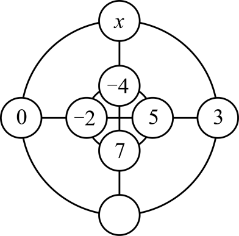
∴x可以为−6或9，当x=−6时，x+y=−6−4=−10，
当x=9时，x+y=9−4=5，
∴x+y的值为−10或5，
故选：D．
【变式3-1】（24-25七年级上·重庆渝中·月考）在学习完有理数的混合运算后，小明和同学一起编制了如下一个运算程序：一开始输入一个非零自然数n，当n为偶数时，就用n除以2，得到一个新的自然数；当n为奇数时，我们先把n乘以3后，其结果再加上1，这样也能得到一个新的自然数．把第一次运算后得到的新的自然数再次代入程序中，按上述法则继续运算，并不断重复这个运算程序m次，直到运算的结果第一次为1时，终止此程序，我们就称m是自然数n的熵．例如自然数n=8时，则第一次运算8÷2=4，第二次运算4÷2=2，第三次运算2÷2=1，这样经过3次运算后结果第一次为1，则称8的熵m=3．若输入自然数n=3，则自然数3的熵m= ；若一个自然数n的熵m=10，则满足条件的所有可能的自然数n的取值之和为 ；
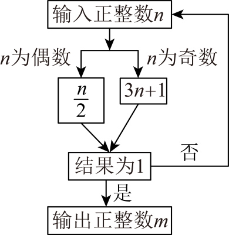
【答案】 7 1572
【分析】本题考查程序流程图与有理数的计算，根据程序流程图代值计算，求出n=3时的熵，根据n为自然数，得到最后结果为1时，一定是2÷2，进而推出熵m=10时，输入的所有可能的自然数n，再求和即可．
【详解】解：当n=3时，
第一次运算：3×3+1=10，
第二次运算：10÷2=5，
第三次运算：3×5+1=16，
第四次运算：16÷2=8，
第五次运算8÷2=4，
第六次运算4÷2=2，
第七次运算2÷2=1，
故自然数3的熵m=7；
当m=10时：
第十次运算时输入为：1×2=2，
第九次运算时输入为：2×2=4，
第八次运算时输入为：4×2=8，
第七次运算时输入为：8×2=16，
第六次运算时输入为：16×2=32，或16−13=5，
第五次运算时输入为：32×2=64或5×2=10，
第四次运算时输入为：64×2=128或64−13=21或10×2=20或10−13=3，
第三次运算时输入为：128×2=256或21×2=42或20×2=40或3×2=6，
第二次运算时输入为：256×2=512或256−13=85或42×2=84或40×2=80或40−13=13或6×2=12，
第一次运算时输入为：512×2=1024或85×2=170或84×2=168或80×2=160或13×2=26或12×2=24，
∴当n=1024,170,168,160,26,24时，满足题意，
∴1024+170+168+160+26+24=1572；
故答案为：7，1572．
【变式3-2】“幻方”最早记载于春秋时期的《大戴礼记》中，如图1所示，每个三角形的三个顶点上的数字之和都与中间正方形四个顶点上的数字之和相等，现将−4，−2，−1，2，3，4，6，7填入如图2所示的“幻方”中，部分数据已填入，则(d−c+b)a的值为 ．

【答案】25或−216
【分析】本题考查了有理数运算和等式的性质，由题意得出a，b，c，d的关系式，分别求出a，b，c，d的值即可，解题关键是根据题目信息列出等式，求出相关字母的值．
【详解】解：根据题意得：a+c−4=a+d+4=−4+a+4+b，
∴b=d+4，c=d+8，c>b>d，
∵−4−2−1+2+3+4+6+7=15，
∴四个三角形的三个顶点上的数字之和减去正方形四个顶点的数字之和为15，
∵每个三角形的三个顶点上的数字之和都与中间正方形四个顶点上的数字之和相等，
∴a+b+4−4=153=5，即a+b=5．
由图知，a，b，c，d的值由−4，−2，−1，2，3，4，6，7中取得，
∴a，b的值可能为−2与7或−1与6或2与3三种情况，
∵b=d+4，
∴b>0，
当a=−2，b=7时，d=3，c=11，不符合题意；
当a=−1，b=6时，d=2，c=10，不符合题意；
当a=2，b=3，d=−1，c=7，符合题意，
则d−c+ba=−1−7+32=−52=25，
当a=3，b=2，d=−2，c=6，符合题意，
则d−c+ba=−2−6+23=−63=−216，
故答案为：25或−216．
【变式3-3】如图是计算机程序的一个流程图，现定义：“x←x+2”表示用x+2的值作为x的值输入程序再次计算．比如：当输入x=2时，依次计算作为第一次“传输”，可得2×2=4，4−1=3，32=9，9不大于2024，所以2+2=4，把x=4输入程序，再次计算作为第二次“传输”，可得4×2=8，8−1=7，……，若输入x=1，那么经过（ ）次“传输”后可以输出结果，结束程序．
A．11 B．12 C．21 D．23
【答案】B
【分析】本题考查程序流程图与有理数计算，一元一次方程的实际应用．根据442=1936<2024,452=2025>2024，得到当输入的数字为23时，输出结果，设设从1开始，经过y次传输，得到x=23，再列出方程进行求解即可．解题的关键是得到输入的数字为23时，输出结果．
【详解】解：∵442=1936<2024,452=2025>2024，
∴当2x−1=45，即：x=23时，即可输出结果，
设从1开始，经过y次传输，得到x=23，
∴1+2y−1=23，
解得：y=12．
故选B．
【考点4 整式加减与周长问题】
【例4】（24-25七年级上·甘肃临夏·期末）如图，在矩形ABCD中放入正方形AEFG，正方形MNRH，正方形CPQN，点E在AB上，点M、N在BC上，若AE=n，MN=m，CN=q，则图中右上角阴影部分的周长与左下角阴影部分的周长的差为（ ）

A．2n B．n+q C．m+n D．2m
【答案】D
【分析】本题考查了整式的加减运算，设AB=DC=a，AD=BC=b，用含a、b的代数式分别表示BE，BM，DG，PD．再表示出图中右上角阴影部分的周长及左下角阴影部分的周长，然后相减即可．
【详解】解：长方形ABCD中，AB=DC．
正方形AEFG中，AE=EF=FG=AG=n．
正方形MNRH中，MN=NR=RH=HM=m．
正方形CPQN中，CP=PQ=QN=CN=q．
设AB=DC=a，AD=BC=b，
则DG=AD−AG=b−n，BE=AB−AE=a−n，
BM=BC−MN−CN=b−m−q，PD=CD−CP=a−q．
∴图中右上角阴影部分的周长为2DG+DP=2b−n+a−q=2a+2b−2n−2q．
左下角阴影部分的周长为2BM+BE=2b−m−q+a−n=2a+2b−2m−2q−2n，
∴图中右上角阴影部分的周长与左下角阴影部分的周长的差为：
2a+2b−2n−2q−2a+2b−2m−2q−2n
=2a+2b−2n−2q−2a−2b+2m+2q+2n=2m．
故选：D．
【变式4-1】（25-26七年级上·广东汕头·期末）把如图1的两张大小相同的长方形卡片放置在图2与图3中的两个相同大长方形中，已知这两个大长方形的长比宽长10cm，若记图2中阴影部分的周长为C1，图3中阴影部分的周长为C2，那么C1−C2= cm．

【答案】20
【分析】本题考查整式的加减、列代数式，解答本题的关键是明确题意，利用数形结合的思想解答．
先设出小长方形和大长方形的长和宽，然后即可表示图2中阴影部分的周长为C1和图3中阴影部分的周长为C2，再作差即可．
【详解】解：设小长方形的长为acm，宽为bcm，大长方形的长为xcm，宽为ycm，
由图③可得，a+b=x，
∵这两个大长方形的长比宽长10cm，
∴y=x−10=a+b−10．
由图②可知：阴影部分的周长C1=2x+y=2x+2y，
由图③可知：阴影部分的周长C2=2x+2y−b+2y−a=2x+2y−2b+2y−2a=2x+4y−2a−2b，
∴C1−C2=2x+2y−2x+4y−2a−2b=2a+2b−2y=2a+b−y．
∵y=a+b−10，
∴a+b−y=10．
∴C1−C2=2×10=20．
故答案为：20．
【变式4-2】（24-25七年级上·安徽亳州·月考）将图1中周长为32的长方形纸片剪成1号、2号、3号、4号正方形和5号长方形，并将它们按图2的方式放入周长为50的长方形中，则没有覆盖的阴影部分的周长为（ ）
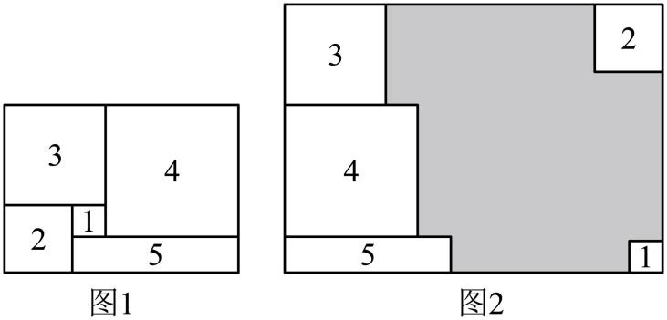
A．18 B．32 C．42 D．48
【答案】C
【分析】此题考查整式加减的应用，平移的性质，利用平移的性质将不规则图形变化为规则图形进而求解，解题的关键是设出未知数，列代数式表示各线段进而解决问题．设1号正方形的边长为x，2号正方形的边长为y，则3号正方形的边长为x+y，4号正方形的边长为2x+y，5号长方形的长为3x+y，宽为y−x，根据图1中长方形的周长为32，求得x+y=4，根据图中长方形的周长为50，求得AB=25−3x−4y，根据平移得：没有覆盖的阴影部分的周长为四边形ABCD的周长=2(AB+AD)，计算即可得到答案．
【详解】解：设1号正方形的边长为x，2号正方形的边长为y，则3号正方形的边长为x+y，4号正方形的边长为2x+y，5号长方形的长为3x+y，宽为y−x，
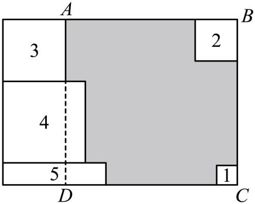
由图1中长方形的周长为32，可得，y+2(x+y)+(2x+y)=16，即4x+y=16
解得：x+y=4，
如图，∵图2中长方形的周长为50，
∴AB+2(x+y)+2x+y+y−x=25，
∴AB=25−3x−4y，
根据平移得：没有覆盖的阴影部分的周长为四边形ABCD的周长，
∴2(AB+AD)
=225−3x−4y+x+y+2x+y+y−x
=2(25−x−y)
=2×25−4
=42；
故选：C．
【变式4-3】（25-26七年级上·浙江杭州·期末）将（1）和（2）两张正方形纸片按图示两种方式放置在同一个长方形中．图（1）中阴影部分的周长和为m，图（2）中阴影部分的周长和为n，且AM=ND．若AD=17，m−n=10，则正方形①的边长为 ．

【答案】73/213
【分析】本题主要考查整式的加减，解题的关键是结合图形表示出图①和图②中阴影部分的周长．设AB=x，正方形①边长为a，正方形②边长为b，表示出图（1）中阴影部分的周长和m及图（2）中阴影部分的周长和n，根据题意列方程即可解决．
【详解】解：设AB=x，正方形①边长为a，正方形②边长为b，
∵ AD=17，
则图（1）中阴影部分的周长和m=217−a+217−b+2x−a+2x−b=4x+68−4a−4b，
∵ AM=ND，
图（2）中阴影部分的周长和为：
n=x+17−b+x−a+172+a2−b+a+17−a2+x−b+17−a2+x−b+17−a2=4x+51−a−4b，
∵ m−n=10，
∴ 4x+68−4a−4b−4x+51−a−4b=17−3a=10，
解得a=73，
故答案为：73．
【考点5 由一元一次方程的解求参数】
【例5】（25-26七年级上·重庆·期末）已知k为整数，且关于x的方程kx+1=3x+6的解为正整数，则整数 k 的值为 ．
【答案】4或8
【分析】本题考查了一元一次方程的解．通过解方程得到x关于k的表达式，再根据x为正整数确定k的取值．
【详解】解：解方程kx+1=3x+6，
移项得k−3x=5，
所以x=5k−3．
由于x为正整数，且k为整数，因此k−3必须是5的正因数，
即k−3=1或k−3=5．
解得k=4或k=8．
当k=3时，分母k−3=0，方程无解，故舍去．
因此整数k的值为4或8．
故答案为：4或8．
【变式5-1】已知关于x的一元一次方程x2023+a=2023x的解是x=2022，关于y的一元一次方程b2023+2023c=−a的解是y=−2021（其中b和c是含有y的代数式），则下列结论符合条件的是（ ）
A．b=−y−1,c=y+1 B．b=1−y,c=y−1
C．b=y+1,c=−y−1 D．b=y−1,c=1−y
【答案】B
【分析】根据x=2022，y=−2021得到x=1−y，得到1−y2023+2023y−1=−a的解为y=−2021，类比b2023+2023c=−a得到答案．
【详解】∵x=2022，y=−2021得到x=1−y，
∴1−y2023+2023y−1=−a的解为y=−2021，
∵方程b2023+2023c=−a的解是y=−2021，
∴b=1−y,c=y−1，
故选B．
【点睛】本题考查了一元一次方程的解即使得方程左右两边相等的未知数的值，正确理解定义是解题的关键．
【变式5-2】已知关于x的方程x−2−ax6=x3−2有非负整数解，则整数a的所有可能的取值的和为（ ）
A．−23 B．23 C．−34 D．34
【答案】C
【分析】先根据解方程的一般步骤解方程，再根据非负数的定义将a的值算出，最后相加即可得出答案．
【详解】解：x−2−ax6=x3−2
去分母，得6x−2−ax=2x−12
去括号，得6x−2+ax=2x−12
移项、合并同类项，得4+ax=−10
将系数化为1，得x=−104+a
∵ x=−104+a是非负整数解
∴a=−5或−6，−9，−14时，x的解都是非负整数
则−5+−6+−9+−14=−34
故选C．
【点睛】本题考查了一元一次方程的解，熟练掌握解方程的一般步骤是解题的关键．
【变式5-3】（24-25七年级下·重庆万州·月考）若不论k取什么数，关于x的方程2kx+m3−x−nk6=1（m、n是常数）的解总是x=1．则m+n的值是（ ）
A．−0.5 B．−1.5 C．0.5 D．15
【答案】A
【分析】先把x=1代入方程2kx+m3−x−nk6=1，整理成关于k的一元一次方程，根据方程的解与k无关，得到关于k的方程有无数解，根据一元一次方程有无数解的条件，列式解答即可．
本题考查了一元一次方程的解，熟练掌握方程有无数解的基本条件是解题的关键．
【详解】解：∵2kx+m3−x−nk6=1，
∴4kx+2m−x+nk=6，
∴4x+nk=6+x−2m，
∵不论k取什么数，关于x的方程2kx+m3−x−nk6=1（m、n是常数）的解总是x=1，
∴4+nk=7−2m，
∴4+n=0,7−2m=0，
∴n=−4,m=3.5，
∴m+n=−4+3.5=−0.5，
故选：A．
【考点6 线段（含数轴）中的动态问题】
【例6】如图，已知数轴上的点C表示的数为6，点A表示的数为−4，点B是AC的中点，动点P从点A出发，以每秒2个单位长度的速度沿数轴向右匀速运动，运动时间为t秒t>0，另一动点Q，从B出发，以每秒1个单位长度的速度沿数轴向左匀速运动，且P，Q同时出发，当t为 秒时，点P与点Q之间的距离为2个单位长度．
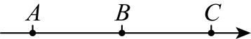
【答案】1或73
【分析】本题考查了一元一次方程的应用，两点间的距离，数轴，进行分类讨论是解题关键．先根据线段中点坐标公式求出点B表示的数，再分别表示出运动t秒时P、Q两点表示的数，然后分P在Q的左边与P在Q的右边两种情况进行讨论，根据PQ=2列方程，求解即可．
【详解】解：∵点C表示的数为6，点A表示的数为−4，
∴点B表示的数是6+(−4)2=1，
依题意可知，运动t秒时，P表示的数为：−4+2t，Q表示的数为：1−t，
点P与点Q之间的距离为2个单位长度时，分两种情况：
①P在Q的左边，
∵PQ=2，
∴1−t−−4+2t=2，
解得t=1；
②P在Q的右边，
∵PQ=2，
∴−4+2t−1−t=2，
解得t=73，
综上所述：当t为1或73秒时，点P与点Q之间的距离为2个单位长度．
故答案为：1或73．
【变式6-1】如图，已知A，B两点在数轴上，点A表示的数为−10，OB=2OA，点M以每秒1个单位长度的速度从点A向右运动，点N以每秒3个单位长度的速度从点B向左运动（点M、点N同时出发），经过几秒，点M、点N分别到原点O的距离相等（ ）
A．5秒 B．5秒或4秒 C．5秒或152秒 D．152秒
【答案】C
【分析】本题考查了数轴上两点之间距离，一元一次方程与行程问题，根据题意，分别求出点M，N表示的数，及运动时间，设运动时间为t秒，分类讨论，第一种情况，点M在原点左边，点N在原地右边；第二种情况，点M，N都在原点左边；第三种情况，当点M在原点右边时，运动时间大于10秒，则点N在点A坐标，不存在OM=ON；图形结合，列式求解即可．
【详解】解：点A表示的数为−10，
∴OA=10，
∵OB=2OA，则OB=20，
∴点B表示的数为20，
∵点M以每秒1个单位长度的速度从点A向右运动，点N以每秒3个单位长度的速度从点B向左运动（点M、点N同时出发），
∴点M从点A到点O的时间为：10秒；点N从点B到点O的时间为：203秒；点N从点B到点A的时间为：30÷3=10（秒）；
根据题意，设经过t秒，
∴点M表示的数为：−10+t，点N表示的数为：20−3t，
第一种情况，点M在原点左边，点N在原地右边，
∴OM=0−−10+t=10−t，ON=20−3t，且OM=ON
∴10−t=20−3t，
解得，t=5；
第二种情况，点M，N都在原点左边，
∴OM=0−−10+t=10−t，ON=0−20−3t=3t−20，且OM=ON，
∴10−t=3t−20，
解得，t=152；
第三种情况，当点M在原点右边时，运动时间大于10秒，则点N在点A坐标，不存在OM=ON；
综上所述，当t=5秒或t=152秒时，点M、点N分别到原点O的距离相等，
故选：C ．
【变式6-2】如图1，点C在线段AB上，图中共有三条线段AB、AC和BC，若其中有一条线段的长度是另外一条线段长度的2倍，则称点C是线段AB的“好点”；如图2，已知AB=16cm．动点P从点A出发，以2cm/s的速度沿AB向点B匀速运动；点Q从点B出发，以1cms的速度沿BA向点A匀速运动，点P，Q同时出发，当其中点P到达终点时，运动停止；设运动的时间为t(s)，当t= s时，Q为线段AB的“好点”．
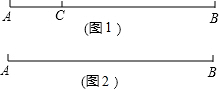
【答案】163或8
【分析】根据题意，得t(s)≤8s；分AQ=2BQ、BQ=2AQ、AB=2BQ=2AQ三种情况分析，分别列一元一次方程并求解，即可得到答案．
【详解】∵动点P从点A出发，以2cm/s的速度沿AB向点B匀速运动
∴点P到达终点时，用时为：16cm2cm/s=8s
∵点P，Q同时出发，点P速度>点Q速度，且当其中点P到达终点时，运动停止
∴t(s)≤8s
如图，Q为线段AB的“好点”
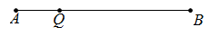
∵点Q从点B出发，以1cms的速度沿BA向点A匀速运动
∴BQ=tcm，则AQ=16−tcm
根据题意，分AQ=2BQ、BQ=2AQ、AB=2BQ=2AQ三种情况分析；
当AQ=2BQ时，16−t=2t
∴t=163s
∵163<8
∴t=163s符合题意；
当BQ=2AQ是，t=216−t
∴t=323s
∵323>8
∴t=323s不符合题意；
当AB=2BQ=2AQ时，16=2t
∴t=8s
∵8=8
∴t=8s符合题意
故答案为：163或8．
【点睛】本题考查了一元一次方程和线段的知识；解题的关键是熟练掌握一元一次方程、线段的性质，从而完成求解．
【变式6-3】（24-25七年级上·陕西西安·月考）如图，M是定长线段AB上一定点，点C在线段AM上，点D在线段BM上，点C、点D分别从点M、点B出发以1cm/s、2cm/s的速度沿直线BA向左运动，运动方向如箭头所示．若点C、D运动时，总有MD=2AC，N是直线AB上一点，且AN−BN=MN，则MNAB= ．

【答案】13或1
【分析】本题考查了两点间的距离，线段的三等分点，解题的关键是掌握线段的和差，等分线段的计算．设运动时间为t，MD=AB−AM−BD，BD=2t cm，AC=AM−CM，CM=t cm，再加上已知条件MD=2AC，就可以得到AM=13AB，再分两种情况讨论计算，当N在线段AB上时，N在线段AB延长线上时，分别求出比值即可．
【详解】解：设运动时间为t，
∵MD=AB−AM−BD，BD=2t cm，
AC=AM−CM，CM=t cm，
MD=2AC，
∴AB−AM−2t=2AM−t cm，
∴AB−AM−2t−2AM+2t=0，
∴AB−3AM=0，
∴AM=13AB，
当N点在线段AB上时，如图所示，

∵AN−BN=MN，
AN−AM=MN，
∴AM=BN=13AB，
∴MN=13AB，即MNAB=13；
当N点在线段AB的延长线上时，如图所示，
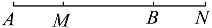
∵AN−BN=MN，
AN−AM=MN，
∴AM=BN=13AB，
∴MN=MB+BN=MB+AM=AB，即MNAB=1；
综上所述，MNAB=13或1．
故答案为：13或1．
【考点7 动角问题】
【例7】（24-25七年级下·黑龙江大庆·期末）如图1，射线OC在∠AOB的内部，图中共有3个角：∠AOB，∠AOC和∠BOC，若其中有一个角的度数是另一个角度数的三倍，则称射线OC是∠AOB的“启仔等分线”．如图2，∠MPN=80∘，若射线PE绕点P从PN位置开始，以每秒8∘的速度顺时针旋转，当∠EPN首次等于180∘时停止旋转，设旋转的时间为t(秒)．当t= 时，射线PN是∠EPM的“启仔等分线”．
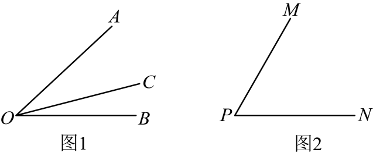
【答案】103秒或5秒或20秒
【分析】本题考查角的运算中的新定义，仔细分析动态过程，确定三种情况是解题的关键．
根据旋转的过程，依次设定∠MPE=3∠EPN，∠MPN=3∠EPN，∠MPE=3∠MPN，∠NPE=3∠MPN四种情况进行分析．
【详解】解：由题意，可分四种情况：
当∠MPE=3∠EPN时，∠EPN=80∘÷2=40∘，
所以t= 40∘÷8∘=5秒；
当∠MPN=3∠EPN时，∠EPN=80∘÷3=803∘，
所以t= 803∘÷8∘=103秒；
当∠MPE=3∠MPN时，∠EPN=80∘×2=160∘，
所以t= 160∘÷8∘=20秒；
当∠NPE=3∠MPN时，∠EPN=80∘×3=240∘，
不符合条件“当∠EPN首次等于180∘时停止旋转”，舍去．
故答案为：5秒或103秒或20秒．
【变式7-1】如图，点O在直线AB上，过O作射线OC，∠BOC＝120°，一直角三角板的直角顶点与点O重合，边OM与OB重合，边ON在直线AB的下方．若三角板绕点O按每秒10°的速度沿逆时针方向旋转一周，在旋转的过程中，第t秒时，直线ON恰好平分锐角∠AOC，则t的值为（ ）
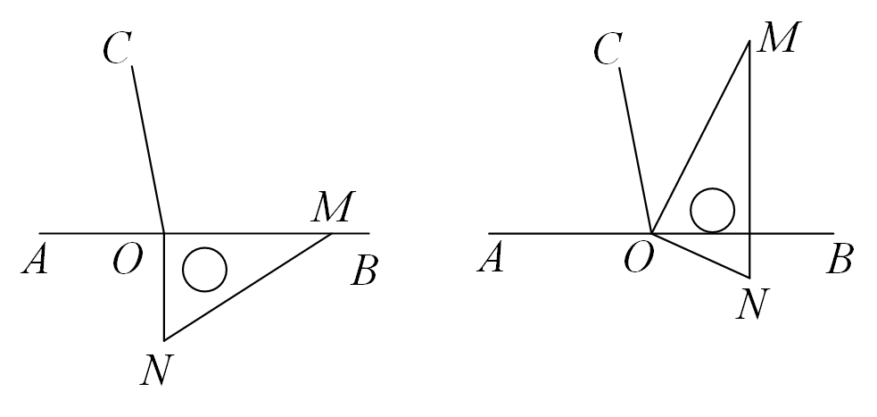
A．5 B．6 C．5或23 D．6或24
【答案】D
【分析】分别讨论ON的反向延长线恰好平分锐角∠AOC和ON在∠AOC的内部；两种情况，根据角平分线的定义及角的和差关系即可得答案．
【详解】∵∠BOC=120°，
∴∠AOC=60°，
①如图，当ON的反向延长线恰好平分锐角∠AOC时，
∴∠BON=12∠AOC=30°，
此时，三角板旋转的角度为90°−30°=60°，
∴t=60°÷10°=6；
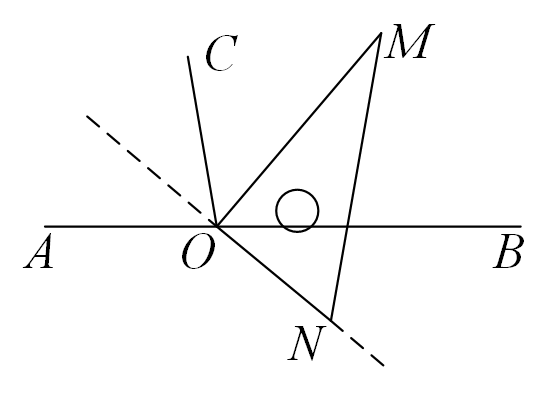
②如图，当ON在∠AOC的内部时，
∴∠CON=12∠AOC=30°，
∴三角板旋转的角度为90°+120°+30°=240°，
∴t=240°÷10°=24；
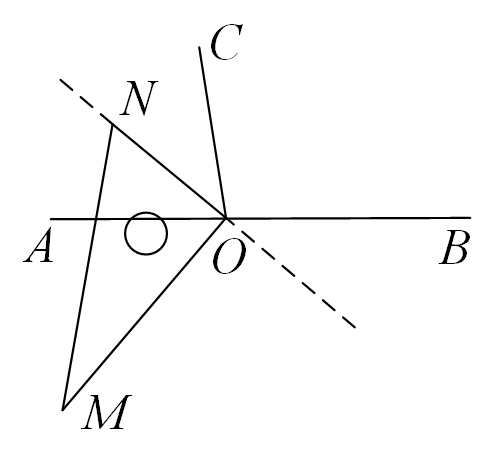
∴t的值为：6或24．
故选：D．
【点睛】此题考查了角平分线的定义及角的运算，解题的关键是灵活运用分类讨论的思想．
【变式7-2】（24-25七年级下·湖南永州·期末）如图1，O为直线AB上一点，作射线OC，使∠AOC:∠BOC=2:1，将一个直角三角尺如图摆放，直角顶点在点O处，一条直角边OP在射线OA上．将图1中的三角尺绕点O以每秒10°的速度按逆时针方向旋转（如图2所示），在旋转一周的过程中，第t秒时，OQ所在直线恰好平分∠AOC，则t的值为 ．
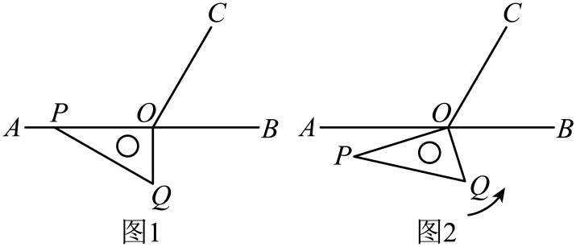
【答案】3或21/21或3
【分析】本题考查了一元一次方程的应用，根据角平分线的定义、平角的定义、列方程是解题的关键．
【详解】解：∵ ∠AOC:∠BOC=2:1，
设∠AOC=2x，∠BOC=x，
∵∠AOC+∠BOC=180°，
∴2x+x=180°，
解得x=60°，
即∠AOC=120°，∠BOC=60°，
∵ OQ所在直线EF恰好平分∠AOC，
∴∠COE=∠AOE=12∠AOC=60°，
∴∠BOF=60°，
∴10t=90−60或10t=90+60+60，
解得t=3或21，
故答案为：3s或21s．
【变式7-3】（24-25七年级上·江苏无锡·期末）如图，∠AOB是平角，射线OM从OA开始，先顺时针绕点O向射线OB旋转，到达OB后再绕点O逆时针向射线OA旋转，速度为6度/秒．射线ON从OB开始，以4度/秒的速度绕点O向OA旋转，到当ON到达OA时，射线OM与ON都停止运动．当∠BON=2∠MON时，则t= ．

【答案】15秒或22.5秒或45秒
【分析】本题考查了动角问题，角的和差，一元一次方程的应用；当0≤t≤18时， 由角的和差得∠MON=180°−∠AOM−∠BON =180°−10t，列方程即可求解；当18<t≤30时，同理可求；当30<t≤45时，同理可求；能熟练利用角的和差表示出所求的角，能根据角的边的不同位置进行分类讨论是解题的关键．
【详解】解：当0≤t≤18时，如图，
∠AOM=6t，
∠BON=4t，
∴ ∠MON=180°−∠AOM−∠BON
=180°−10t，
∵ ∠BON=2∠MON，
∴4t=2180°−10t，
解得：t=15；
当18<t≤30时，如图，
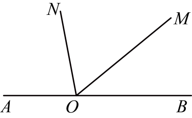
∴ ∠BOM=180°−∠AOM
=180°−6t，
∴ ∠MON=∠BON−∠BOM
=4t−180°−6t
=10t−180°，
∵ ∠BON=2∠MON，
∴4t=210t−180°，
解得：t=22.5；
当30<t≤45时，如图，
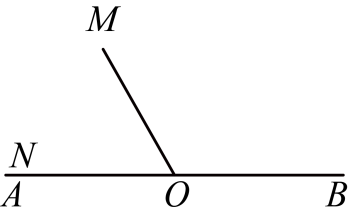
∴ ∠BOM=6t−180°
∴ ∠MON=∠BON−∠BOM
=4t−6t−180°
=180°−2t，
∵ ∠BON=2∠MON，
∴4t=2180°−2t，
解得：t=45；
故答案：15秒或22.5秒或45秒．
【考点8 与钟面角有关的角度计算】
【例8】我们知道在9点整时，时钟的分针与时针恰好互相垂直，那么从9点开始，到10点之前，经过 分钟后，时钟的时针与分针的夹角为105°．
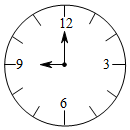
【答案】3011或30
【分析】利用分针的旋转速度是6度/分钟，时针的旋转速度是0.5度/分钟，分两种情况讨论即可.
【详解】解：分针的旋转速度是6度/分钟，时针的旋转速度是0.5度/分钟，设经过x分钟后，时钟的时针与分针的夹角为105°，
分两种情况：
如图：
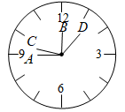
此时，∠AOC=0.5x，∠BOD=6x，
则∠COD=∠AOB+∠BOD-∠AOC= 90°+6x-0.5x=105°，
解得x=3011；
如图：
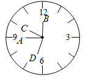
此时，∠AOC=0.5x，∠BOD=360°-6x，
则∠COD=∠BOD-∠AOB+∠AOC=360°-6x -90°+0.5x=105°，
解得x=30；
综上，经过3011或30分钟后，时钟的时针与分针的夹角为105°，
故答案为：3011或30
【点睛】本题考查了钟表问题，解题时经常用到每两个数字之间的度数是30°，分钟每分钟转过的角度为6度，时钟每分钟转过的角度为0.5度．借助图形，更容易解决．同时考查一元一次方程的应用，得到时针所走路程和分针所走路程的等量关系是解决本题的关键．
【变式8-1】从时针与分针第一次成90°的角，到时针与分针第二次成90°的角，共经过（ ）分钟（结果四舍五入到整数）．
A．30 B．31 C．33 D．39
【答案】C
【分析】本题考查了钟表问题，根据分钟每分钟转过的角度为6度，时钟每分钟转过的角度为0.5度，列出算式90°+90°÷6°−0.5°即可求解，掌握钟表基本常识是解题的关键．
【详解】解：∵分针每分钟转6°，时针每分钟转0.5°，
∴90°+90°÷6°−0.5°≈33（分钟），
故选：C．
【变式8-2】（24-25七年级上·福建福州·期末）在日常生活中，时钟是我们常见的计时工具，其时针和分针按照固定的规律不停地转动着．如图是一个正常运行的时钟表盘，时针和分针有条不紊地围绕着表盘中心按各自的速度运转．现在是3点钟整，从这个时刻开始，当时针与分针第一次成90°角时，则所经过的时长（答案四舍五入到整数）是（ ）
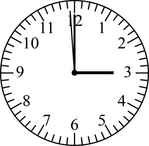
A．30分钟 B．31分钟 C．32分钟 D．33分钟
【答案】D
【分析】本题考查了钟表问题的实际应用，一元一次方程，熟练掌握钟表的特征是解题的关键．分针每分钟转6°，时针转0.5°，设x分钟后时针与分针第一次成90°角，则有6x=0.5x+180，再解方程即可求解．
【详解】解：设x分钟后时针与分针第一次成90°角，
根据题意得：6x=0.5x+180，
解得：x=1805.5≈33，
故选：D．
【变式8-3】在2点到4点之间，时针和分针的夹角会有成90°的情形，请问这个时间点分别是 ．
【答案】2时30011分或3时整或3时36011分
【分析】先求出时针、分针每分钟转动的度数，分2点和3点之间，3点和4点之间两种情况，根据角的和差关系列一元一次方程求解．
【详解】解：∵ 时针每60分钟走一大格，即转动30°，分针每60分钟走一圈，即转动360°，
∴时针每分钟转动0.5°，分针每分钟转动6°．
2时，时针与分针的夹角为60°，
2时和3时之间时，设2时x分，时针和分针的夹角会成90°，
则6x−(60+0.5x)=90或6x−(60+0.5x)=270，
解得x=30011或x=60（舍），
即2时30011分时，时针和分针的夹角会成90°；
3点时，时针与分针的夹角为90°，
3时和4时之间时，设3时x分，时针和分针的夹角会成90°，
则6x−(90+0.5x)=90，
解得x=36011或x=0（舍），
即3时整或3时36011分时，时针和分针的夹角会成90°，
综上，2时30011分或3时整或3时36011分时，时针和分针的夹角会成90°．
故答案为：2时30011分或3时整或3时36011分．
【点睛】本题考查钟表的认识，角的和差关系，一元一次方程的实际应用等，解题的关键是求出时针、分针每分钟转动的度数，注意分情况讨论，避免漏解．
【考点9 规律探究】
【例9】（25-26七年级上·陕西咸阳·期末）如图，数轴上O，A两点的距离为24，一动点P从点A出发，按以下规律跳动：第1次跳动到AO的中点A1处，第2次从A1点跳动到A1O的中点A2处，第3次从A2点跳动到A2O的中点A3处．按照这样的规律继续跳动到点A4,A5,A6⋅⋅⋅An（n≥3，n是整数）处，问经过这样2025次跳动后的点A2025与A1A2的中点的距离是（ ）

A．9−3×122022 B．9−3×122023
C．124−3×122023 D．12−3×122022
【答案】A
【分析】本题考查了数轴上点的跳动规律以及中点距离的计算，通过观察每次跳动后点与原点O的距离变化，可以发现一个规律，即每次跳动后点与O的距离是前一次距离的一半，利用这个规律，可以计算出经过2025次跳动后点A2025与A1A2中点的距离，掌握相关知识是解题的关键．
【详解】解：∵数轴上O,A两点的距离为24，
∴点A表示的数为24，
A1表示的数为24×12=12，
A2表示的数为24×122=6，
A3表示的数为24×123，
A4表示的数为24×124，
⋯⋯，
An表示的数为24×12n，
∴经过这样2025次跳动后的点A2025表示的数为24×122025，
∵点A表示的数为24，A1表示的数为12，A2表示的数为6，
∴A1A2的中点表示的数为12+62=9，
∴经过这样2025次跳动后的点与A1A2的中点的距离为：
9−24×122025=9−3×8×122025=9−3×122022，
故选：A．
【变式9-1】（25-26九年级上·福建南平·期末）在“点燃我的梦想，数学皆有可能”数学创新设计活动中，小强设计了一个数学探究活动，他对依次排列的两个整式−m和−n按如下规律进行操作：第1次操作后得到3个整式−m，−n，−n+m；第2次操作后得到4个整式−m，−n，−n+m，m…其操作规则为：每次操作所增加的整式，都是用上一次操作得到的最后一个整式减去其前一整式的差，小强将这个活动命名为“回头差”游戏．则该“回头差”游戏的第2023次操作后得到的各整式之和是 ．
【答案】−2n
【分析】本题考查了整式的加减运算以及代数式的规律探究，根据题意得到规律是解题的关键．先逐步分析前面几次的操作，可发现规律，操作所得整式的和每六次一循环，然后根据2023÷6=337⋯1，即可得出第2023次操作对应周期中的第1次操作后的和．
【详解】解：初始整式为−m和−n，和为−m−n．
第1次操作后，得到整式−m、−n、−n+m，和为−2n；
第2次操作后，得到整式−m、−n、−n+m、m，和为m−2n；
第3次操作后，得到整式−m、−n、−n+m、m、n，和为m−n；
第4次操作后，得到整式−m、−n、−n+m、m、n、n−m，和为0；
第5次操作后，得到整式−m、−n、−n+m、m、n、n−m、−m，和为−m；
第6次操作后，得到整式−m、−n、−n+m、m、n、n−m、−m、−n，和为−m−n；
此后每6次操作，所得整式的和循环一次．
因为2023÷6=337⋯1，余数为1，
所以第2023次操作后得到的各整式之和与第1次操作后相同，为−2n．
故答案为：−2n．
【变式9-2】（24-25七年级上·黑龙江哈尔滨·期末）用黑白两种颜色的正六边形地砖按如下所示的规律，拼成若干个图案，若第n个图形中白色地砖比黑色地砖多299块，则n的值为（ ）
A．100 B．99 C．98 D．60
【答案】B
【分析】本题考查图形变化规律，解一元一次方程．用含n的代数式表示出第n个图形中白色地砖及黑色地砖数量，再根据等量关系列方程，解方程即可．
【详解】解：由图可知，第1个图形有6块白色地砖，后面每个图形都比其前一个图形多4个白色地砖，
第n个图形中黑色地砖有n块，白色地砖数量为：6+4n−1=4n+2，
由第n个图形中白色地砖比黑色地砖多299块，可得：4n+2−n=299，
解得n=99，
故选：B．
【变式9-3】（24-25六年级下·山东东营·期末）如图，在综合实践课上，老师让同学们动手操作．在∠AOB内画1条射线，观察发现图中共有3个角：在∠AOB内画2条射线时，则图中共有6个角：在∠AOB内画3条射线时，则图中共有10个角：按照此规律，在∠AOB内画n条射线时，图中共有 个角．
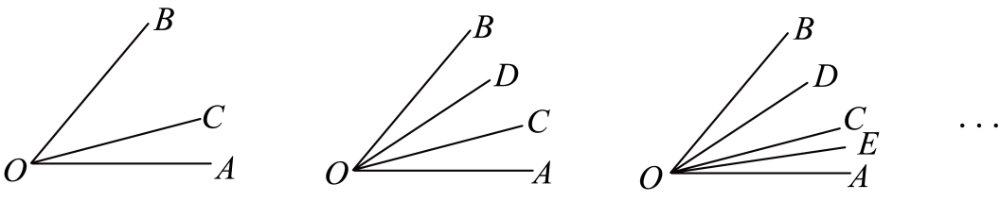
【答案】n+1n+22
【分析】本题考查了对角的概念的应用，关键是能根据求出结果得出规律．
根据图形数出即可得出前三个的答案，根据结果得出规律．
【详解】解：∵在∠AOB内画射线，画1条射线，图中共有3个角=(1+1)(1+2)2；
画2条射线，图中共有6个角=(2+1)(2+2)2；
画3条射线，图中共有10个角=(3+1)(3+2)2；
∴画n条射线，图中共有(n+1)(n+2)2个角，
故答案为：(n+1)(n+2)2．
【考点10 多结论问题】
【例10】（25-26七年级上·重庆·期末）有理数a，b，c，d在数轴上的对应点的位置如图所示．则在下列选项中，正确个数是（ ）
①若ac=0，则bd<0；
②若c=2，d=3，则d−c=1或d−c=5；
③若a+b+c=0且abc≠0，则b+c|a|+2a+c|b|+3a+b|c|=0
④若abcde为一个五位自然数，则|a−b|+|b−c|+|c−a|+|d−e|的最大值是17
A．1 B．2 C．3 D．4
【答案】A
【分析】本题考查了绝对值的化简，整式的加减，正确通过数轴判断绝对值符号里式子的正负是解题的关键．
利用数轴可得d>c>b>a，再根据每项的关键信息，逐一判断各项对错即可解答．
【详解】解：①若ac=0，则有两种情况，a=0或c=0，
当a=0时，0<b<d，
所以bd>0，故①错误；
②若c=2，d=3，则c=±2，d=±3，
由数轴可得c<d，
所以c=±2，d=3，
∴ d−c=1或d−c=5，故②正确；
③由题意知，a+b=−c，b+c=−a，a+c=−b，
∴ b+c|a|+2a+c|b|+3a+b|c|=−a|a|+−2b|b|+−3c|c|，
∵a+b+c=0，且abc≠0，
∴a，b，c为一负二正或两负一正，
即a<0,c>b>0或a<b<0,c>0
∴当a<0,c>b>0时，
b+c|a|+2a+c|b|+3a+b|c|=−a|a|+−2b|b|+−3c|c|=1−2−3=−4，
当a<b<0,c>0时，
b+c|a|+2a+c|b|+3a+b|c|=−a|a|+−2b|b|+−3c|c|=1+2−3=0，
故③错误；
由数轴可得d>c>b>a，
∵abcde为一个五位自然数，
∴d>c>b>a>0,e≥0，
∴|a−b|+|b−c|+|c−a|+|d−e|
=b−a+c−b+c−a+|d−e|，
=2c−2a+|d−e|，
当d=9，e=0，c=8，a=1时，2c−2a+|d−e|取最大值为23，故④错误，
故选：A
【变式10-1】（25-26六年级上·山东淄博·期末）现定义一种“M运算”：对于若干个数，先将每两个数作差，再将这些差的绝对值进行求和．
例如：对−3，1，6这三个数进行“M运算”，得，−3−1+−3−6+1−6=4+9+5=18．
则，对−3，1，6这三个数进行“M运算”的结果为18．
若关于“M运算”有下列说法：
①对a，7这两个数进行“M运算”的结果是2，则a的值是9；
②对b，−8，10这三个数进行“M运算”的结果是36，则b的值最大为10，最小为−8；
③对c，−2，5，11这四个数进行“M运算”，则当c=5时，该运算的结果取得最小值为39．
则以上关于“M运算”的说法中，正确的是 ．（只填写所选择的序号）
【答案】②③
【分析】本题考查了新定义运算，化简绝对值符号，整式的加减运算．
说法①中，由“M运算”定义得a−7=2，解得a=5或9，说法不全面；说法②中，由条件得b+8+b−10=18，解得−8≤b≤10；说法③中，分情况求值，进而判断即可．
【详解】说法①：对a，7进行“M运算”为a−7，由结果为2得a−7=2，则a−7=2或a−7=−2，解得a=9或a=5，说法①错误；
说法②：对b， −8，10进行“M运算”为b+8+b−10+−8−10=b+8+b−10+18，由结果为36得b+8+b−10=18．
当b≤−8时，b+8=−b−8，b−10=−b+10，则−b−8+−b+10=−2b+2=18，解得b=−8；
当−8<b≤10时，b+8=b+8，b−10=−b+10，则b+8+−b+10=18恒成立；
当b>10时，b+8=b+8，b−10=b−10，则b+8+b−10=2b−2=18，解得b=10（不在b>10范围内）；
故−8≤b≤10，即b最大为10，最小为−8，说法②正确；
说法③：对c， −2，5，11进行“M运算”，固定部分为−2−5+−2−11+5−11=7+13+6=26，变量部分为c+2+c−5+c−11，总结果S=c+2+c−5+c−11+26．
当c<−2时，S=−c+2−c−5−c−11+26=−c−2−c+5−c+11+26=−3c+40>46；
当c=−2时，S=−2+2+−2−5+−2−11+26=0+7+13+26=46；
当−2<c<5时，S=c+2−c−5−c−11+26=c+2−c+5−c+11+26=44−c，39<44−c<46；
当c=5时，S=5+2+5−5+5−11+26=7+0+6+26=39；
当5<c<11时，S=c+2+c−5−c−11+26=c+2+c−5−c+11+26=c+34，39<c+34<45；
当c=11时，S=11+2+11−5+11−11+26=13+6+0+26=45；
当c>11时，S=c+2+c−5+c−11+26=3c+12>45；
故当c=5时，该运算的结果取得最小值为39，说法③正确．
故答案为②③．
【变式10-2】（25-26七年级上·河北衡水·期末）如图，OP是一条拉直的8cm长的细线，把这条细线沿某点向右折叠，然后在重叠部分的某处剪断得到三条细线，发现这三条细线的长度之比为1:1:2，求折痕处与点P的距离．甲、乙、丙三位同学讨论后，给出了如下结论：甲：折痕处与点P的距离是5cm；乙：折痕处与点P的距离是4cm；丙：折痕处与点P的距离是3cm．下列说法正确的是（）

A．只有甲正确 B．甲、乙都正确
C．乙、丙都正确 D．甲、乙、丙都正确
【答案】D
【分析】本题考查了线段的对折问题．
求出这三条线段的长度分别为2cm，2cm，4cm，再分情况讨论即可得解．
【详解】解：∵线段长为8cm，这三条线段的长度之比为1:1:2，
∴8÷1+1+2=2，
∴这三条线段的长度分别为2cm，2cm，4cm，
如图1，若OC=CD=2cm,DP=4cm，则EP=ED+DP=2÷2+4=5cm，甲说法正确；
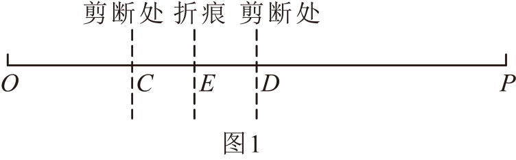
如图2，若OC=DP=2cm,CD=4cm，则EP=ED+DP=4÷2+2=4cm，乙说法正确；
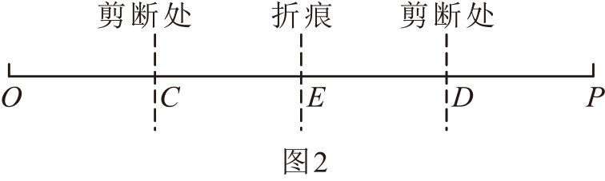
如图3，若OC=4cm,CD=DP=2cm，则EP=ED+DP=2÷2+2=3cm，丙说法正确；
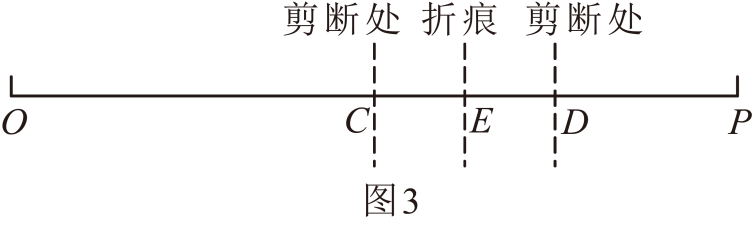
故选：D．
【变式10-3】（24-25七年级上·吉林长春·月考）如图，点O在直线AB上，OC平分∠BOD，OE平分∠AOD．给出下面四个结论：①∠AOE与∠BOC互余：②∠BOE与∠EOD互补；③∠AOD+∠BOE=∠BOD+180°；④∠AOC−∠BOC=2∠EOD．上述结论中，正确结论的序号有 ．
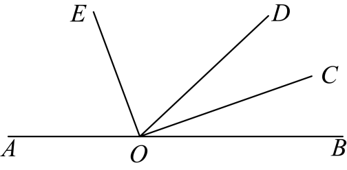
【答案】①②④
【分析】本题主要考查角平分线的性质、余角、补角和角度的和差关系，根据角平分线得∠BOC=∠COD和∠AOE=∠EOD，利用平角即可判定①，结合余角和补角得定义即可判断②，利用角平分线的性质和平角即可判断③，利用角度和差关系即可判断④．
【详解】解：∵OC平分∠BOD，OE平分∠AOD
∴∠BOC=∠COD，∠AOE=∠EOD，
∵A，O，B三点在同一直线上，
2∠BOC+2∠AOE=2∠BOC+∠AOE=180°，
∴∠BOC+∠AOE=90°，
即∠BOC与∠AOE互余，故①正确；
∵A，O，B三点在同一直线上，
∴∠BOE+∠AOE=180°，
∵OE平分∠AOD，
∴∠AOE=∠EOD，
∴∠BOE+∠EOD=180°，
即∠BOE与∠EOD互补，故②正确；
∵∠AOD+∠BOD=180°，
∴∠AOD+∠BOD+∠EOD=∠EOD+180°，
则∠AOD+∠BOE=∠EOD+180°，
不能得到∠EOD=∠BOD即∠AOD+∠BOE=∠BOD+180°，
故③错误；
∵∠BOC=∠COD，∠AOE=∠EOD，
∴∠AOC−∠BOC=∠AOD+∠DOC−∠BOC=∠AOD=2∠EOD，故④正确；
故答案为：①②④．
【解答压轴篇】
【考点11 含字母的绝对值的化简问题】
【例11】（25-26七年级上·陕西西安·期末）有理数a，b，c在数轴上对应的点的位置如图所示，解答下列问题：
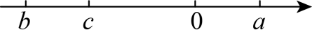
(1)化简：a−b−b+c+−a+c；
(2)求aa+bb+cc+abcabc的值．
【答案】(1)2a
(2)0
【分析】本题考查了根据点在数轴的位置判断式子的正负、带有字母的绝对值化简问题、整式加减等，根据数轴上的点所在的位置，准确判断各个代数式的符号是解题的关键．
（1）根据数轴得到a>0>c>b，从而得出a−b>0，b+c<0，−a+c<0，然后化简绝对值即可；
（2）根据a>0>c>b，得出abc>0，a=a，b=−b，c=−c，然后化简绝对值即可．
【详解】（1）解：由数轴可知，a>0>c>b，
∴a−b>0，b+c<0，−a+c<0，
∴a−b−b+c+−a+c
=a−b−−b+c−−a+c
=a−b+b+c+a−c
=2a；
（2）解：∵a>0>c>b，
∴abc>0，a=a，b=−b，c=−c，
∴aa+bb+cc+abcabc
=aa+−bb+−cc+abcabc
=1−1−1+1
=0．
【变式11-1】（25-26七年级上·湖南衡阳·期末）如图点A，B在数轴上分别表示有理数a，b，A，B两点之间的距离表示为AB，在数轴上A，B两点之间的距离AB=a−b．
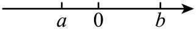
回答下列问题：
(1)1与−3两点之间的距离是________，x和−3两点之间的距离是________．
(2)若x表示一个有理数，请你化简x−1+x+3，并结合数轴求x−1+x+3的最小值．（写解答过程）
(3)x−1−x+3的最大值是________．
(4)x−1+x−2+x−3的最小值是________．
(5)x−1+x−2+x−3+x−4的最小值是________．
(6)x−1+x−2+x−3+⋯⋯x−2025的最小值是________．
【答案】(1)4 x+3
(2)见解析
(3)4
(4)2
(5)4
(6)1025156
【分析】本题主要考查数轴、绝对值：
（1）根据题干描述，即可求得答案；
（2）化简x−1+x+3，分x≥1，−3≤x≤1，x≤−3三种情况讨论；x−1+x+3 =数轴上表示x的点和1的点的两点之间的距离+数轴上表示x的点和−3的点的两点之间的距离，据此即可求得答案；
（3）x−1−x+3 =数轴上表示x的点和1的点的两点之间的距离−数轴上表示x的点和−3的点的两点之间的距离，据此即可求得答案；
（4）当x=2时，x−1+x−2+x−3有最小值；
（5）当2≤x≤3时，x−1+x−2+x−3+x−4有最小值；
（6）当x=1013时，x−1+x−2+x−3+⋯⋯x−2025有最小值．
【详解】（1）解：1与−3两点之间的距离=1−−3=4，x和−3两点之间的距离=x−−3=x+3．
故答案为：4 x+3
（2）当x≥1时，x−1+x+3=x−1+x+3=2x+2．
当−3≤x≤1时，x−1+x+3=−x−1+x+3=4．
当x≤−3时，x−1+x+3=−x−1−x+3=−2x−2．
因为x−1+x+3=x−1+x−−3，
所以x−1+x+3 =数轴上表示x的点和1的点的两点之间的距离+数轴上表示x的点和−3的点的两点之间的距离．
所以当−3≤x≤1时，x−1+x+3有最小值为4．
（3）因为x−1−x+3=x−1−x−−3，
所以x−1−x+3 =数轴上表示x的点和1的点的两点之间的距离−数轴上表示x的点和−3的点的两点之间的距离．
当x≤−3时，x−1−x+3有最大值，最大值=−x−1+x+3=4．
故答案为：4
（4）根据题意可知，当x=2时，x−1+x−2+x−3有最小值，最小值=2−1+2−2+2−3=2．
故答案为：2
（5）根据题意可知，当2≤x≤3时，x−1+x−2+x−3+x−4有最小值，最小值=x−1+x−2−x+3−x+4=4．
故答案为：4
（6）根据题意可知，当x=1013时，x−1+x−2+x−3+⋯⋯x−2025有最小值，
最小值=1013−1+1013−2+1013−3+···+1013−1013+1014−1013+1015−1013++···+2025−1013
=−1−2−3−1012+···1014+1015+···2025
=1013×1012
=1025156．
故答案为：1025156
【变式11-2】（25-26七年级上·福建福州·期末）定义：将三个不等于0的有理数a，b，c两两相除（其中对于a，b可得ab，ba两种商），得到的商是m个互不相等的数（相等的商看作是一个数），称这m个数为这三个有理数的“互商组”，m为该“互商组”的基数．
例如，对于三个有理数1，2，3，得到“互商组”：12，2，13，3，23，32，其基数为6．
(1)求2，2，−6的“互商组”；
(2)请举例探究对于任意三个不等于0的有理数a，b，c的“互商组”的基数m的所有可能取值；
(3)已知三个不等于0的有理数a，b，c的“互商组”是d，e，f，它们在数轴上所表示的点分别是D，E，F（如下图）．若x−d+x−e+x−f的最小值为4，且a+b+c=5，求abc的值．
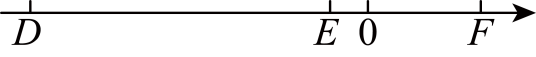
【答案】(1)2，2，−6的互商组为：−3，−13，1；
(2)基数m的所有可能取值为1，2，3，4，5，6；
(3)abc的值为−9或375．
【分析】本题主要考查有理数的运算，绝对值的意义，掌握绝对值的意义及有理数的运算法则是解题的关键．
（1）根据“互商组”的概念求解即可；
（2）根据题意列举，分①若三个有理数为2，2，2；③若三个有理数都不相等，如1，1，−1，如2，2，4，③若三个有理数都不相等，如1，2，4，如2，−2，1，如1，2，3，再求“互商组”得基数m即可；
（3）由②可得，当互商组基数为3时，a、b、c中存在两数相等情况，假设a=b≠c，再分情况讨论求abc的值即可．
【详解】（1）由题意：因为2÷2=1，2÷−6=−13，−6÷2=−3
所以2，2，−6的互商组为：−3，−13，1；
（2）①若三个有理数为2，2，2，此时m=1
②若有两个有理数相等，
如1，1，−1，则互商组为1，−1，此时m=2
如2，2，4，则互商组为1，2，12，此时m=3
③若三个有理数都不相等，
如1，2，4，则互商组为2，12，4，14，此时m=4，
如2，−2，1，则互商组为−1，2，12，−2，−12，此时m=5，
如1，2，3，此时m=6，
综上所述，基数m的所有可能取值为1，2，3，4，5，6．
（3）由②可得，当互商组基数为3时，a、b、c中存在两数相等情况，假设a=b≠c，
则d、e、f中有一个为1，结合数轴可得：f=1
因为x−d+x−e+x−f最小值为4，
所以当x=e时取到最小值，即1−d=4，得d=−3，e=−13．
所以，a=b=−3c或a=b=−13c
当a=b=−3c时，由a+b+c=5得−3c−3c+c=5，即c=−1
所以abc=9c3=9×−13=−9
当a=b=−13c时，由a+b+c=5得−13c−13c+c=5，即c=15
所以abc=19c3=19×153=375．
综上所述abc的值为−9或375．
【变式11-3】（25-26七年级上·福建泉州·期末）对于非零的有理数a，当a>0时，a=a；当a<0时，a=−a．读以上材料，完成下列问题：
(1)若a=−2，求aa的值；
(2)若ab>0，求aa+bb的值；
(3)已知n个非零的有理数a1，a2，…，an−1，ann≥4，记x1=a1a1，x2=a2a2，…，xn=anan，若x1x2+x2x3+⋯+xn−1xn+xnx1=0，试说明：n一定能被4整除．
【答案】(1)−1
(2)2或−2
(3)见解析
【分析】解：本题考查绝对值，有理数的运算，数的整除，掌握相关知识是解决问题的关键．
（1）将a=−2代入计算即可；
（2）因为ab>0，分类讨论，若a>0,b>0或a<0,b<0，代入计算即可；
（3）xn=anan的值为1或−1，则x1x2,x2x3,⋯,xn−1xn,xnx1中每一项的值为1或−1，由x1x2+x2x3+⋯+xn−1xn+xnx1=0可知，值为1和值为−1的项数相同，所以n是值为−1的项的个数的2倍，又因为x1x2⋅x2x3⋅⋯⋅xn−1xn⋅xnx1=x1x2x3⋅⋯⋅xn−1xn2=1，即x1x2⋅x2x3⋅⋯⋅xn−1xn⋅xnx1=1，即其中值为−1的项有偶数个，所以n为偶数的2倍，据此即可证明题目所求．
【详解】（1）解：若a=−2，
aa=−2−2=2−2=−1；
（2）解：∵ab>0，
若a>0,b>0，
则aa+bb=aa+bb=1+1=2；
若a<0,b<0，
则aa+bb=−aa+−bb=−1+−1=−2，
综上所述，aa+bb的值为2或−2；
（3）解：∵xn=anan，
当an>0时，xn=anan=anan=1，
当an<0时，xn=anan=−anan=−1，
∴xn=1或xn=−1，
则x1x2,x2x3,⋯,xn−1xn,xnx1中每一项的值为1或−1，
∵x1x2+x2x3+⋯+xn−1xn+xnx1=0，
∴其中值为1和值为−1的项数相同，
∵一共有n项，
∴n是值为−1的项的个数的2倍，
∵x1x2⋅x2x3⋅⋯⋅xn−1xn⋅xnx1=x1x2x3⋅⋯⋅xn−1xn2=1，
∴x1x2⋅x2x3⋅⋯⋅xn−1xn⋅xnx1=1，
即其中值为−1的项有偶数个，设为有2k个（k为正整数）
∴n为2k的2倍，
∴n=2⋅2k=4k，
∴n一定能被4整除．
【考点12 有理数运算的规律探究】
【例12】（25-26七年级上·浙江嘉兴·期末）我校七年级数学兴趣小组成员们自主开展数学微项目研究．结合本阶段学习内容的特点，他们决定研究数的一些“神秘”性质．
探索数的神秘性质 | ||
素材 | 尼科马库斯是古希腊数学家，他的著作《算术入门》中记载了各种数分门别类的整理成果，其中任何一个整数m的立方都可以写成m个连续奇数之和． | 举例论证： 13=1；23=3+5；33=7+9+11； 请你按规律写出：43=______． |
规律总结 | 当m是奇数7时，则等号右边式子中的中间数（即第4个数）为______； | 当m为偶数10时，则等号右边式子中的中间两个数（即第5和第6个数）为______． |
综合应用 | 利用上面结论计算：13+23+33+⋯+93+103+113． | |
拓展延伸 | 我们还发现以下规律：已知m≥2，n≥2，且m，n均为正整数，如果将mn进行如图所示的“分解”； 若mn（且m，n均为不大于7的正整数）的分解中有奇数17，则mn的值为______．
| |

【答案】素材：13+15+17+19；规律总结：49，99，101；综合应用：4356；拓展延伸：32或64．
【分析】本题考查了数字的变化规律，有理数的加法运算，指数方程，利用方程思想是解题的关键．
素材：设未知数，列方程求解即可；
规律总结：根据左边数与右边中间一个数或两个数的平均数的关系求解即可；
综合应用：找出规律，根据规律进行计算即可求解；
拓展延伸：根据题意，验证求解．
【详解】解：素材：设43=a−2+a+a+2+a+4，
解得：a=15，
∴43=13+15+17+19，
故答案为：13+15+17+19；
规律总结：设73=a−6+a−4+a−2+a+a+2+a+4+a+6，
解得：a=49，
当m=10时，102−1=99，102+1=101，
故答案为：49，99，101；
综合应用：13=1=12，
13+23=1+8=9=32=1+22，
13+23+33=1+8+27=36=62=1+2+32，
13+23+33+43=1+8+27+64=100=102=1+2+3+42，
…
∴13+23+33+…+93+103+113
=1+2+3+⋅⋅⋅+9+10+112，
=1+11×1122
=662
=4356
拓展延伸：当m=2时，2n−1+1=17，
解得：n=4，
此时25=15+17，
mn=25=32，
当m=4时，4n−1+1=17，
解得n=3，
此时43=13+15+17+19，
mn=43=64，
故答案为：32或64．
【变式12-1】（25-26七年级上·四川泸州·期末）数学活动课上，李老师列举了以下等式：
第1个等式：11×2=1−12；
第2个等式：12×3=12−13；
第3个等式：13×4=13−14．
根据等式规律，解决下列问题：
(1)写出第4个等式为_______，第n个等式为______；
(2)利用等式规律计算：11×2+12×3+13×4+14×5+⋅⋅⋅+12022×2023．
(3)拓展计算：11×3+13×5+15×7+⋅⋅⋅+12023×2025．
(4)计算：14+112+124+140+160+184+1112+1144+1180．
【答案】(1)14×5=14−15，1nn+1=1n−1n+1
(2)20222023
(3)10122025
(4)920
【分析】本题考查了有理数的混合运算中规律问题，理解题意，找出规律是解题的关键．
（1）观察等式，得出规律，即可求解；
（2）根据题意，将每个式子拆成1n−1n+1，由此可得解；
（3）根据题意，将每个式子拆成121n−1n+2，由此可求解；
（4）先对分式变形，再用裂项相消法计算．
【详解】（1）解：第4个等式：14×5=14−15
第n个等式：1nn+1=1n−1n+1；
（2）解：11×2+12×3+13×4+⋅⋅⋅+12022×2023
=1−12+12−13+13−14+⋅⋅⋅+12022−12023
=1−12023
=20222023；
（3）解：11×3+13×5+15×7+⋅⋅⋅+12023×2025
=12×1−13+12×13−15+12×15−17+⋅⋅⋅+12×12023−12025
=12×1−13+13−15+15+⋅⋅⋅+12023−12025
=12×1−12025
=12×20242025
=10122025；
（4）解：14+112+124+140+160+184+1112+1144+1180
=12×12+16+112+120+130+142+156+172+190
=12×11×2+12×3+13×4+14×5+⋅⋅⋅+19×10
=12×1−12+12−13+13−14+⋅⋅⋅+19−110
=12×1−110=12×910=920．
【变式12-2】（24-25七年级上·浙江绍兴·期末）阅读下列材料：
第一个等式：1×2=131×2×3−0×1×2
第二个等式：2×3=132×3×4−1×2×3
第三个等式：3×4=133×4×5−2×3×4
第四个等式：4×5=……
以上前三个等式相加可得：
1×2+2×3+3×4=131×2×3−0×1×2+132×3×4−1×2×3+133×4×5−2×3×4
=131×2×3−0×1×2+2×3×4−1×2×3+3×4×5−2×3×4
=133×4×5−0×1×2=20
(1)根据规律写出第四个等式：4×5= ；
(2)根据规律写出第n个等式：n×n+1= ；
(3)根据规律计算：1×2+2×3+3×4+⋯+18×19+19×20
【答案】(1)4×5=134×5×6−3×4×5
(2)n×n+1=13n×n+1×n+2−n−1×n×n+1
(3)2660
【分析】本题主要考查了数字规律、列代数式、有理数的混合运算等知识点，发现规律是解题的关键．
（1）类比前3个等式，写出第四个等式即可；
（2）根据（1）归纳规律即可解答；
（3）按（2）的规律变形原式，然后整理即可解答．
【详解】（1）解：第一个等式：1×2=131×2×3−0×1×2，
第二个等式：2×3=132×3×4−1×2×3，
第三个等式：3×4=133×4×5−2×3×4，
第四个等式：4×5=134×5×6−3×4×5．
故答案为：134×5×6−3×4×5．
（2）解：由（1）可归纳第n个等式为n×n+1=13n×n+1n+2−n−1×n×n+1．
（3）解：1×2+2×3+3×4+⋯+18×19+19×20
=131×2×3−0×1×2+132×3×4−1×2×3+133×4×5−2×3×4+⋯+1319×20×21−18×19×20 =131×2×3−0×1×2+2×3×4−1×2×3+3×4×5−2×3×4+⋯+19×20×21−18×19×20
=13−0×1×2+19×20×21
=2660．
【变式12-3】（25-26七年级上·四川·期末）同学们利用正方形面积通过数形结合完成了12+122+123+⋯+126的求值，除了数形结合的方法以外，这类式子也有另一种代数求法，解法如下：
设S=12+122+123+⋯+126． ①
将①×12（注意：12是前面式子中后一个除以前一个数的值）
12S=122+123+⋯+126+127． ②
将①−②得S−12S=12+122+123+⋯+126−122+123+⋯+126+127，
所以 12S=12−127，S=1−126．
(1)完成下列计算：3×313=___________； 12×312−11×312=__________；（用幂表示结果）
(2)利用上述方法，求出3+32+33+34+…+312的值；
(3)【新情景】小聪同学用乐高积木块搭建了一个神奇的“知识塔”，塔的第1级用了 1×3块积木，第2级用了2×32块，第3级用了3×33 块，……，按照此规律，直到第12级用了 12×312块．已知每级塔的积木块数都符合 层级数×3层级数的规律，若 a=313，求出建造这座“知识塔”总共需要的积木块数（用含 a 的式子表示）．
【答案】(1)314,312；
(2)313−32；
(3)23a+34．
【分析】本题考查了有理数的混合运算，理解题意并列出正确的算式是解题的关键．
（1）利用同底数幂乘法法则及乘法分配律计算即可；
（2）设S=3+32+33+34+…+312，则3S=32+33+34+…+312+313，两式相减并计算即可；
（3）根据题意令T=1×3+2×32+3×33+4×34+…+12×312，则3T=1×32+2×33+3×34+…+11×312+12×313，将两式作差后再利用题干中的方法计算即可．
【详解】（1）解：3×313=314，
12×312−11×312=12−11×312=1×312=312，
故答案为：314，312；
（2）解：设S=3+32+33+34+…+312，①
将①×3得：3S=32+33+34+…+312+313，②
②−①得：2S=32+33+34+…+312+313−3+32+33+34+…+312=313−3，
∴S=313−32，
∴3+32+33+34+…+312=313−32；
（3）解：设T=1×3+2×32+3×33+4×34+…+12×312，①
将①×3得：3T=1×32+2×33+3×34+…+11×312+12×313，②
②−①得：3T−T=1×32+2×33+3×34+…+11×312+12×313−1×3+2×32+3×33+4×34+…+12×312，
=12×313−3−32−33−34−…−312
由（2）可知3+32+33+34+…+312=313−32，
∴2T=12×313−313−32．
∵若a=313，
∴2T=12a−a−32=23a+32，
∴T=23a+34，
∴1×3+2×32+3×33+4×34+…+12×312=23a+34．
【考点13 有理数运算的实际应用】
【例13】（25-26七年级上·湖北恩施·期末）某工厂根据安排原计划每天生产300个零件，但实际日产量与原计划相比有出入，下表是一周内的实际日产量．（增产记为正，减产记为负）
星期 | 一 | 二 | 三 | 四 | 五 | 六 | 日 |
产量/个 | +15 | −6 | −12 | −9 | −8 | +10 | +18 |
(1)日实际产量最多为__________个，最少为__________个；
(2)该厂实行计件工资制：若当天完成计划，计划内生产出的零件每个按10元发工资，超额完成的部分每个按15元发工资；若当天未完成计划，已完成的部分每个按10元的六折发工资，求该厂这一周发放的工资总额；
(3)若将题干中的“增产记为正，减产记为负”改为“比前一天产量增加记为正，比前一天产量减少记为负”，题干中表格的数据依次转化为下表数据．直接写出下表中“？”处的数据．
星期 | 一 | 二 | 三 | 四 | 五 | 六 | 日 |
产量/个 | … | −21 | … | … | … | ？ | … |
【答案】(1)318，288
(2)16635元
(3)+18
【分析】本题主要考查正负数在实际生活中的应用．解决本题的关键是熟练掌握有理数的运算法则，按照题意的要求计算即可．
（１）根据正负数的实际意义，进行有理数的大小比较即可；
（２）先计算每天的工资，再相加即可求解；
（３）根据题意计算差值即可．
【详解】（1）解：∵+18>+15>+10>−6>−8>−9>−12，
∴日实际产量最多为：300+18=318（个），
日实际产量最少为：300−12=288（个）．
故答案为：318，288．
（2）解：由题意得，该厂这一周发放的工资总额为：
300×3×10+(18+15+10)×15+(300×4−6−12−9−8)×10×0.6=16635（元）．
答：该厂这一周发放的工资总额为16635元．
（3）解：由题意得，+10−(−8)=+18，
∴“？”处的数据为：+18．
【变式13-1】（25-26七年级上·广东潮州·期末）数学活动：进位制的认识和探究
【阅读材料】如图，第十四届国际数学教育大会（简称ICME-14）于2021年在上海举办．会徽以中国文化中的“洛书”与“河图”为原本，展现了我国古代数学的文化魅力，其右下方的“卦”是用我国古代的计数符号写出的八进制数3745，记为37458．八进制数是以8作为进位基数的数字系统，有0~7共8个基本数字．八进制数3745换算成十进制数是3×83+7×82+4×81+5×80=2021．（规定当a≠0时，a0=1）．
【任务探究】在现实生活中，我们用得最多的是十进制记数法，满十进一．但在计算机领域中，用到的更多的是二进制记数法．一个二进制数的各数位上的数字为0和1，满二进一．在计算机中输入一个十进制数89，经过计算机处理将其转换成一个二进制数：
89=64+16+8+1=1×26+0×25+1×24+1×23+0×22+0×21+1×20=10110012．
（1）任务1：将十进制数45转换成二进制数是__________．将二进制数1010012转换成十进制数是__________．
（2）任务2：二进制数的数位有两个数字0和1，满二进一．二进制数的加法法则如下：
0+0=0，0+1=1，1+0=1，1+1=10（读作“壹零”，意思是结果为0，并向高位进1）．这四条规则是二进制所有计算的基础．
根据二进制数加法法则，计算100102+1112=__________．
【拓展应用】任务3：如图1，是小明的准考证号的二维码的简易编码（黑色代表1，白色代表0），每一行都代表一个二进制的数字，将每一行的二进制数字转换成十进制数，依次组合到一起就是小明的十进制的十位准考证号2412072813．

图2是小辉的准考证号的二维码的简易编码，请通过计算求出小辉的十进制的十位准考证号．
【答案】（1）1011012，41；（2）100102+1112=110012；（3）小辉的十进制的十位准考证号是2410272108
【分析】本题主要考查新定义下的有理数的乘方运算及加法运算，根据题目所给定义和规律对题目提供的特殊问题进行讨论和解决是解决此类问题的主要思路．
（1）按照题目所给方法计算即可；
（2）由题意，先将100102+1112转化为十进制，再转化为二进制即可求解；
（3）将图形中的二进制转化为十进制，进而可得答案．
【详解】解：（1）由题意，45=32+8+4+1=1×25+0×24+1×23+1×22+0×21+1×20=1011012，
1010012=1×25+0×24+1×23+0×22+0×21+1×20=32+8+1=41，
故答案为：1011012，41；
（2）由题意，100102=1×24+0×23+0×22+1×21+0×20=16+2=18，
1112=1×22+1×21+1×20=4+2+1=7，
∴100102+1112=18+7=25，
∵25=16+8+1=1×24+1×23+0×22+0×21+1×20=110012，
∴100102+1112=110012；
（3）解：第一行：110002=1×24+1×23+0×22+0×21+0×20=16+8+0+0+0=24，
第二行：010102=0×24+1×23+0×22+1×21+0×20=0+8+0+2+0=10，
第三行：110112=1×24+1×23+0×22+1×21+1×20=16+8+0+2+1=27，
第四行：101012=1×24+0×23+1×22+0×21+1×20=16+0+4+0+1=21，
第五行：010002=0×24+1×23+0×22+0×21+0×20=0+8+0+0+0=8，
所以小辉的十进制的十位准考证号是2410272108．
【变式13-2】（25-26七年级上·福建福州·期末）根据以下素材，探索完成任务．
素材1 | 福州市地铁实行里程分段计价票制，具体票价标准如下： 起步价：5公里（含5公里）以内为2元． 里程价：5~15公里（含15公里），每5公里加收1元（不足5公里按5公里计价）． 15~29公里（含29公里），每7公里加收1元（不足7公里按7公里计价）． 29公里以上，每9公里加收1元（不足9公里按9公里计价）． 备注： ①乘车途中若出站则需重新购票； ②两个地铁站之间里程为两站之间沿地铁的最短线路长度，且往返票价相同． 例如，若某两站之间有两种乘坐线路，长度分别为6公里和16公里，乘车途中没有出站，按票价标准的计费分别为3元和5元，则此两站之间的里程应为6公里，票价定为3元． |
素材2 | 福州市地铁通过多条线路形成高效便捷的交通环线，如图所示，从凤岗里站到城门站就有两条不同的线路形成一条环线．（图中各站点间距离均为近似值，帝封江站，城门站，南门兜站和金山站是不同线路的换乘站，整条环线共有26个站点，其余站点暂不标出）
|
素材3 | 中学生持学生卡享5折优惠，其中空卡工本费为28元（卡内金额0元，需充值后使用）；通过“e福州”APP乘车码，可享9折优惠． |
问题解决 | |
任务1 | 小莉乘坐地铁从A站到B站，票价为3元，则A，B两站之间的最长里程是多少公里？ |
任务2 | 小莉从凤岗里站出发，沿路线1（乘坐5号线再换乘4号线）前往城门站游玩，游玩后再从城门站出发沿路线2（依次乘坐1号线，2号线，5号线）返回凤岗里站，小莉在往返两地的途中没有出站．请你根据素材2中的地铁线路长度，分别计算路线1和路线2按票价标准的计费，并通过大小比较思考小莉往返全程的实际地铁票价． |
任务3 | 若小莉沿路线1在凤岗里站和城门站之间往返，设其往返来回为一次里程，总里程数为a次，请你根据素材3的优惠方式分别用含a的代数式表示办学生卡出行和通过“e福州”出行的总花费，并思考当总里程数为8次时，哪种方式出行更合算． |

【答案】任务1：10公里；任务2：路线1和2按票价标准的计费分别为4元和6元，小莉往返全程的实际地铁票价为8元；任务3：当总里程数为8次时，通过“e福州”出行更合算
【分析】本题考查了里程分段计费规则的理解与应用，有理数的加减法运算及逻辑推理．
任务1：先明确各里程段计费规则，根据票价判断里程范围，计算超过5公里部分的费用及里程最终计算出A、B两站间的最大里程即可；
任务2：根据地铁线路及各段里程，结合里程分段计价规则，分别计算两条线路的票价即可；
任务3：根据任务2和素材3得到路线1和路线2的里程和票价，再用含a的代数式表示两种出行方式的总花费并比较，分析办学生卡和“e福州”的优惠方式，最终比较出两种出行方式的总花费即可得到结果．
【详解】解：任务1：
∵起步价：5公里（含5公里）以内为2元，里程价：5~15公里（含15公里），每5公里加收1元（不足5公里按5公里计价），
∴当票价为3元时，A、B两站之间最长里程是5+5=10（公里），
即当票价为3元时，A、B两站之间最长里程是10公里；
任务2：
∵路线1地铁线路长度为10.5+2.7=13.2（公里），
∴路线1按票价标准的计费为2+1×2=4（元），
∵路线2地铁线路长度为14.9+8.6+1.3=24.8（公里），
∴路线2按票价标准的计费为2+1×2+1×2=6（元），
∵4<6，两个地铁站之间里程为两站之间沿地铁的最短线路长度，且往返票价相同，
∴从凤岗里站到城门站的票价应为4元，
∴小莉往返全程的实际地铁票价为4×2=8（元），
即路线1和2按票价标准的计费分别为4元和6元，小莉往返全程的实际地铁票价为8元；
任务3：
由任务2和素材3可知，
办学生卡出行的总花费为：28+8×0.5×a=4a+28（元），
通过“e福州”出行的总花费：8×0.9×a=7.2a（元），
当a=8时，
4a+28=4×8+28=60（元），
7.2a=7.2×8=57.6（元），
∵60>57.6，
∴当总里程数为8次时，通过“e福州”出行更合算．
【变式13-3】（25-26七年级上·北京·期末）国庆期间，某超市各个区域都有促销活动，小明一家去逛该超市，准备购买纸巾，请你根据以下素材帮助小明探索在实际购买过程中哪种活动更优惠．
【素材1】超市的纸巾区域推出两种活动：
活动一：购物满100元减10元，满200元减30元，满300元减60元，⋯，上不封顶．
活动二：所有商品打8.5折．
【素材2】小明家用的两种纸巾信息如下：1袋清风牌纸巾共12包，超市标价40元/袋；1箱4D溶纸巾共12包，超市标价60元/箱．
【素材3】小明家平均3天用1包清风牌纸巾，平均5天用1包4D溶纸巾．
【解决问题】
按需要存半年（按180天计算）的量计算，
(1)小明家半年需要消耗清风牌纸巾_____袋，消耗4D溶纸巾_____箱；
(2)小明家清风牌纸巾还有1袋存货，4D溶纸巾存货不清楚．
①小明需要购买2种纸巾，其中需要购买4D溶纸巾x箱，在不参与促销活动的前提下，所需的总费用为_____元（用含x的代数式表示）；
②当x=1时，若小明选择活动一，则所需的总费用为_____元；
③若小明家4D溶纸巾没有存货，选择哪种活动更优惠？请说明理由．
【答案】(1)5，3
(2)①160+60x；②190；③活动一，见解析
【分析】（1）根据题意，180÷3÷12=5（袋），180÷5÷12=3（箱）解答即可；
（2）①根据题意，小明需要购买清风牌纸巾5−1=4（袋），需要购买4D溶纸巾x箱，列代数式得4×40+60x=160+60x（元）；
②当x=1时，160+60x=220（元），选择活动一，满200元减30元，故所需的总费用为220−30=190元；
③根据题意，x=3时，160+60x=340（元），选择活动一，满300元减60元，故所需的总费用为340−60=280（元）；选择活动二，340×85100=289（元），解答即可．
本题考查了代数式的值，有理数的运算，打折，熟练掌握运算是解题的关键．
【详解】（1）解：根据题意，180÷3÷12=5（袋），180÷5÷12=3（箱），
故答案为：5，3．
（2）解：①根据题意，小明需要购买清风牌纸巾5−1=4（袋），需要购买4D溶纸巾x箱，列代数式得4×40+60x=160+60x（元），
故答案为：(160+60x)；
②解：当x=1时，160+60x=220（元），
选择活动一，满200元减30元，
故所需的总费用为220−30=190（元），
故答案为：190；
③解：活动一更优惠；
根据题意，x=3时，160+60x=340（元），
选择活动一，满300元减60元，
故所需的总费用为340−60=280（元）；
选择活动二，340×85100=289（元），
故活动一更优惠．
【考点14 整式加减中的不含某项问题】
【例14】（25-26七年级上·福建厦门·期末）定义：若x−y=m，则称x是y关于m的相关数．
(1)若6是a关于2的相关数，则a=_______；
(2)若A是B关于m的相关数，A=2mn−3m+n+5，B的值与m无关，求B的值．
【答案】(1)4
(2)7
【分析】本题考查了新定义运算，整式的加减无关类型，理解新定义是解题的关键．
（1）根据定义列出式子求解即可；
（2）根据新定义求得B，进而根据题意B的值与m无关，令含m项的系数为0即可求解．
【详解】（1）解：∵6是a关于2的相关数，
∴6−a=2
解得a=4；
故答案为：4；
（2）解：∵A是B关于m的相关数，A=2mn−3m+n+5，
∴A−B=m，
∴B=A−m=2mn−3m+n+5−m=2mn−4m+n+5=2mn−2+n+5，
∵B的值与m无关，
∴n−2=0，得n=2，
∴ B=2+5=7．
【变式14-1】（1）一天数学老师布置了一道数学题：已知x=2017，求整式x3−6x2−7x+8−−x2−3x+2x3−3+x3+5x2+4x−1的值，小明观察后提出：“已知x=2017是多余的”，你认为小明的说法有道理吗？请解释.
（2）已知整式M=x2+5ax−3x−1，整式M与整式N之差是3x2+4ax−x.
①求出整式N.
②若a是常数，且2M+N的值与x无关，求a的值.
【答案】（1）小明说的有道理，理由见解析.
(2) ①N=-2x2+ax-2x-1 ② a=811．
【分析】（1）原式去括号合并同类项后得到最简结果，根据化简结果中不含x，得到x的值是多余的．
（2）①根据题意，可得N=（x2+5ax-3x-1）-（3x2+4ax-x），去括号合并即可；
②把M与N代入2M+N，去括号合并得到最简结果，由结果与x值无关，求出a的值即可．
【详解】（1）小明说的有道理，理由如下：
原式=x3-6x2-7x+8+x2+3x-2x3+3+x3+5x2+4x-1
=（1-2+1）x3+（-6+1+5）x2+（-7+3+4）x+（8+3-1）
=10，
由此可知该整式的值与x的取值无关，所以小明说的有道理．
（2）①N=（x2+5ax-3x-1）-（3x2+4ax-x）
=x2+5ax-3x-1-3x2-4ax+x
=-2x2+ax-2x-1；
②∵M=x2+5ax-3x-1，N=-2x2+ax-2x-1，
∴2M+N=2（x2+5ax-3x-1）+（-2x2+ax-2x-1）
=2x2+10ax-6x-2-2x2+ax-2x-1
=（11a-8）x-3，
由结果与x值无关，得到11a-8=0，
解得：a=811．
【点睛】此题考查了整式的加减，熟练掌握去括号与合并同类项法则是解本题的关键．
【变式14-2】一个多项式的次数为m，项数为n，我们称这个多项式为m次多项式或者m次n项式，例如：5x3y2−2x2y+3xy为五次三项式，2x2−2y2+3xy+2x为二次四项式．
（1）−3xy+2x2y2−4x3y3+3为________次________项式．
（2）若关于x、y的多项式A=ax2−3xy+2x，B=bxy−4x2+2y，已知2A−3B中不含二次项，求a+b的值．
（3）已知关于x的二次多项式，ax3−x2+3x+b2x2+x+x3−5在x=2时，值是−17，求当x=−2时，该多项式的值．
【答案】（1）六，四；（2）−8；（3）−1．
【分析】（1）根据一个多项式的次数为m，项数为n，我们称这个多项式为m次多项式或者m次n项式，即可解答；
（2）计算出2A−3B，根据不含二次项，即二次项的系数为0，求出a，b的值，即可解答；
（3）先将关于x的二次多项式变形，根据二次多项式的特点求出a、b的值，进而求出当x=−2时，该多项式的值．
【详解】解：（1）−3xy+2x2y2−4x3y3+3为六次四项式；
故答案为：六，四；
（2）2A−3B=2(ax2−3xy+2x)−3(bxy−4x2+2y)=(2a+12)x2−(6+3b)xy+4x−6y，
∵2A−3B中不含二次项，
∴2a+12=0，6+3b=0，
∴a=−6，b=−2，
∴a+b=(−6)+(−2)=−8；
（3）a(x3−x2+3x)+b(2x2+x)+x3−5=(a+1)x3+(2b−a)x2+(3a+b)x−5．
∵ (a+1)x3+(2b−a)x2+(3a+b)x−5是关于x的二次多项式
∴a+1=0，即a=−1．
∴(a+1)x3+(2b−a)x2+(3a+b)x−5=(2b+1)x2+(b−3)x−5
又当x=2时，原代数式的值是−17
∴4(2b+1)+2(b−3)−5=−17
解得：b=−1．
∴关于x的二次多项式a(x3−x2+3x)+b(2x2+x)+x3−5
=(2b+1)x2+(b−3)x−5
=[2×(−1)+1]x2+(−1−3)x−5
=−x2−4x−5
∴当x=−2时，原式=−(−2)2−4×(−2)−5=−1．
【点睛】本题考查了多项式，解决本题的关键是熟记多项式的有关概念．
【变式14-3】（24-25七年级上·河北秦皇岛·期末）定义新运算“△”和“□”：
①定义新运算“△”：给定有理数a、b，对于整式A、B，规定A△B=aA−bB，等式右边是通常的减法、乘法运算；
②定义新运算“□”：给定正整数n（n≥2），对于整式M，规定n□M=M△M△…△Mn个M（按从左到右的顺序依次做“△”运算）例如：当a=1、b=2，n=2时，对于A=x，B=y，则有A△B=A−2B=x−2y，2□A=A△A=x−2x=−x．
(1)当a=2，b=2时，若A=x+2y，B=2x−3y，求A△B和3□A．
(2)直接写出一组a，b的值，使得对任意一个正整数n（n≥2）和任意—个整式M，都有n□M=M成立．
(3)当a=1，b=2时，若A=4x2+3xy+5y2，B=10x2−7xy+6y2+8，若(p□A)△(q□B)（p、q为正整数，且p≥2、q≥2）中不含x2项，直接写出满足条件的一组p、q的值．
【答案】(1)−2x+10y，−2x−4y；
(2)a=1，b=0
(3)p=4，q=2.
【分析】本题考查的是新定义运算的含义，整式的加减运算，理解新定义是解本题的关键；
（1）由题意可得A△B=2A−2B，再根据新定义运算法则计算即可；
（2）令a=1，b=0，可得A△B=1×A−0×B=A，再根据新定义推导即可；
（3）由a=1，b=2，可得A△B=A−2B，结合A=4x2+3xy+5y2，B=10x2−7xy+6y2+8，(p□A)△(q□B)（p、q为正整数，且p≥2、q≥2）中不含x2项，可得运算中只考虑x2项，再进一步利用新定义探索即可.
【详解】（1）解：当a=2，b=2时，
∴A△B=2A−2B，
∵A=x+2y，B=2x−3y，
∴A△B=2x+2y−22x−3y
=2x+4y−4x+6y
=−2x+10y；
3□A=A△A△A
=2x+2y−2x+2y△x+2y
=0△x+2y
=2×0−2x+2y
=0−2x−4y
=−2x−4y；
（2）解：当a=1，b=0时，
∴A△B=1×A−0×B=A，
∴n□M=M△M△…△Mn个M
=M△M△…△Mn−1个M
=M△M△…△Mn−2个M
=⋅⋅⋅⋅⋅⋅
=M；
（3）解：当a=1，b=2时，
∴A△B=A−2B，
∵A=4x2+3xy+5y2，B=10x2−7xy+6y2+8，(p□A)△(q□B)（p、q为正整数，且p≥2、q≥2）中不含x2项，
∴运算中只考虑x2项，
∴2□A=A△A=A−2A=−A−4x2，
3□A=A△A△A=−A△A=−3A−12x2，
4□A=A△A△A△A=−A△A△A=−3A△A=−5A−20x2；
⋅⋅⋅⋅⋅⋅
2□B=B△B=B−2B=−B−10x2，
⋅⋅⋅⋅⋅⋅
∴(4□A)△(2□B)=−20x2△−10x2
=−20x2−2×−10x2
=−20x2+20x2
=0，
∴(p□A)△(q□B)（p、q为正整数，且p≥2、q≥2）中不含x2项，满足条件的p=4，q=2.
【考点15 由整式加减解决整除问题】
【例15】（25-26七年级上·山东德州·期末）若一个两位数的十位和个位上的数字分别为x和y，我们可将这个两位数记为xy．同理，一个三位数的百位、十位和个位上的数字分别为a，b和c．则这个三位数可记为abc．
(1)若x=3，则2x+x3=______________；若t=2，则t83−5t9=___________．
(2)ab+ba一定能被11整除，请说明这个结论的理由．
(3)任选一个三位数，要求个、十、百位的数字各不相同且不为零，把这个三位数的三个数字按大小重新排列，得出一个最大的数和一个最小的数，用得出的最大的数减去最小的数得到一个新数，再将这个新数按上述方式重新排列，再相减，像这样运算若干次后一定会得到同一个重复出现的数，这个数称为“卡普雷卡尔黑洞数”．则“卡普雷卡尔黑洞数”是______________．
【答案】(1)56；−246
(2)见解析
(3)495
【分析】（1）根据新定义，将式子转化为平常的式子，再计算即可；
（2）将式子转化为平常的式子，再合并同类项，从而可说明结论成立；
（3）任意写了一个三位数，以题中所作的操作，直到重复出现时就可以得“卡普雷卡尔黑洞数” ．
【详解】（1）解：∵x=3，
∴2x+x3=23+33=56，
∵t=2，
∴t83−5t9=283−529=−246，
故答案为：56；−246；
（2）ab+ba=10a+b+10b+a=11a+11b=11a+b，
∵a、b都是整数，
∴11a+b也是整数，
∴11a+b一定能被11整除，
∴ab+ba一定能被11整除；
（3）若以3、2、5组成三位数，
则最大的数是532，最小的数是235，
∴532−235=297，
以2、9、7组成三位数，
则最大的数是972，最小的数是279，
972−279=693，
以6、9、3组成三位数，
则最大的数是963，最小的数是369，
963−369=594，
以5、9、4组成三位数，
则最大的数是954，最小的数是459，
954−459=495，
以4、9、5组成三位数，
则最大的数是954，最小的数是459，
954−459=495，
…
∴“卡普雷卡尔黑洞数”是495，
故答案为：495；
【点睛】本题考查了已知字母的值求代数式的值，整式加减的应用，十进制整数及表示方法，整数问题的综合应用等知识，解题关键是掌握上述知识点并能运用求解．
【变式15-1】（25-26七年级上·重庆·期末）一个四位自然数M=abcd，其中千位数字是个位数字的两倍，百位数字与十位数字之和为10，则称这个四位数为“倍和数”，记FM=ab+cd，例如：四位数6193，因为6=2×3，1+9=10，所以6193是“倍和数”，F6193=61+93=154；四位数8154，∵8=2×4，1+5≠10，所以8154不是“倍和数”
(1)请判断6423，4552是否是“倍和数”，并说明理由；
(2)若N是“倍和数”，FN的两倍与N的各位数字之和能被11整除，请求出这个四位数．
【答案】(1)6423不是“倍和数”，4552是“倍和数”．
(2)2551、4282、8734
【分析】本题考查新定义，整数的加减运算，熟练掌握新定义是解题的关键：
（1）根据新定义，进行判断即可；
（2）设N=abcd，得到a=2d,b+c=10，根据FN的两倍与N的各位数字之和能被11整除，进行求解即可．
【详解】（1）解：6=2×3,4+2=6≠10，
∴6423不是“倍和数”，
4=2×2,5+5=10，
∴4552是“倍和数”；
（2）设N=abcd，
∵N是“倍和数”，
∴a=2d,b+c=10，
∵FN的两倍与N的各位数字之和能被11整除，
又∵210a+b+10c+d+a+b+c+d
=20a+2b+20c+2d+a+b+c+d
=21a+3b+21c+3d
=21⋅2d+310−c+21c+3d
=45d+18c+30
=44d+11c+22+d+7c+8，
∴d+7c+8能被11整除，
由题意可知：1≤d≤4，1≤c≤9，且c,d均为整数，
∴当d=1时，c=5，此时a=2,b=5，N=2551；
当d=2时，c=8，此时a=4,b=2，N=4282；
当d=4时，c=3，此时a=8,b=7，N=8734；
综上：这个四位数可以为：2551、4282、8734．
【变式15-2】（25-26七年级上·福建福州·期末）对于任何一种进制——X进制，运算时是逢X进一，十进制是逢十进一、二进制是逢二进一，以此类推.X进制就是逢X进一.为与十进制进行区分，我们常把用X进制表示的数a写成(a)X．
X进制的数转化为十进制数的方法：
例如：(101)2=1×22+0×21+1×20=5，(1023)5=1×53+0×52+2×51+3×50=138．
根据材料，完成以下问题：
(1)把下列进制表示的数转化为十进制表示的数：(10101)2=______，(102)3=______；
(2)一个四进制三位数(a3b)4与一个五进制三位数(1ba)5之和能被6整除(a,b均为正整数)，求a的值；
(3)已知七进制数(mm4)7与六进制数(n2n)6之差为292，请判断能否找到符合条件的m和n．若能，求出m和n的值；若不能，请说明理由．
【答案】(1)21，11
(2)a=1
(3)不能找到符合条件的m和n，理由见解析
【分析】该题主要考查其它进制与十进制的转化、还考查了整式的加减的应用．
（1）根据转化算法公式直接代入即可算出．
（2）把这两个数都转化为十进制数求和，再根据和是6的整数倍的特征求解即可；
（3）把两个数都转化为十进制数做差，再根据(mm4)7与(n2n)6之差为292列等式，再根据所得等式，进一步讨论m、n的值．
【详解】（1）解：因为(10101)2=1×24+0×23+1×22+0×21+1×20=16+0+4+0+1=21，
故答案为：21；
(102)3=1×32+0×31+2×30=9+0+2=11，
故答案为：11；
（2）解：因为四进制三位数(a3b)4=a×42+3×41+b×40=16a+12+b，
五进制三位数(1ba)5=1×52+b×51+a×50=25+5b+a，
∴(a3b)4+(1ba)5=16a+12+b+25+5b+a=17a+6b+37能被6整除，
∵6b能被6整除，17a+37=12a+36+5a+1中12a+36能被6整除，
∴5a+1也能被6整除，
∵a是(a3b)4的首位数字且为正整数，
∴1≤a≤3．
当a=1时，5a+1=6，能被6整除；
当a=2时，5a+1=11，不能被6整除；
当a=3时，5a+1=16，不能被6整除．
所以a=1；
（3）解：不能找到符合条件的m和n，理由如下：
因为(mm4)7=m×72+m×71+4×70=49m+7m+4=56m+4，(n2n)6=n×62+2×61+n×60=36n+12+n=37n+12，
所以(mm4)7−(n2n)6=56m+4−37n+12=292，
整理得：56m−37n=300，
即m=37n+30056，
∵七进制中1≤m≤6，m为整数，六进制中1≤n≤5，n为整数，
∴代入n的可能值进行验证：
n=1时，m=33756（非整数）；
n=2时，m=37456（非整数）；
n≥3时，m的值均大于6（超出了七进制的范围）).
因此，不能找到符合条件的m和n．
【变式15-3】（25-26七年级上·广东广州·期末）若一个三位数的百位，十位，个位上的数字分别a，b，c，则记这个三位数为n=abc，于是n=abc=100a+10b+c．若a+c−b=6，则称这个三位数为“好六数”．例如：n=413，因为4+3−1=6，所以413是“好六数”．
(1)判断：352___________“好六数”．（填“是”或“不是”）
(2)若n=110t+17（t为不超过8的正整数），则n是“好六数”．请说明理由．
(3)已知三位自然数m是“好六数”，且m=100a+10b−16（a，b为不超过9的自然数），p是m去掉其百位数字后的两位数，而q是m去掉其个位数字后的两位数，则p与q的和能被3整除吗？请写出结论，并说明理由．
【答案】(1)不是
(2)理由见解析
(3)p与q的和能被3整除．理由见解析
【分析】本题考查了新概念，列代数式及整式加减的应用等知识，理解题意并正确计算是关键．
（1）根据“好六数”的含义判断即可；
（2）易得n=100t+10(t+1)+7，根据“好六数”的含义判断即可；
（3）对b的取值分三种情况：①b=0；②b=1；③b≥2，利用“好六数”即可求解．
【详解】（1）解：∵3+2−5=0≠6，
∴352不是“好六数”；
故答案为：不是；
（2）解：∵n=110t+17=100t+10t+10+7=100t+10(t+1)+7，
∴n的百位上数字为t，十位上数字为t+1，个位上数字为7，
∴t+7−(t+1)=6，
∴n是“好六数”．
（3）解：结论：p与q的和能被3整除．
理由如下：
①若b=0，m=100a−16=100(a−1)+80+4．
∵m为三位数，
∴a≥2，
∴m的百位上数字为a−1，十位上数字为8，个位上数字为4，
∵m是“好六数”，
∴(a−1)+4−8=6，
解得：a=11，与题设矛盾，舍去．
②若b=1，m=100a−6=100(a−1)+90+4．
∵m为三位数，
∴a≥2，
∴m的百位上数字为a−1，十位上数字为9，个位上数字为4，
∵m是“好六数”，
∴(a−1)+4−9=6，即a=12，与题设矛盾，舍去．
③若b≥2，
∵m=100a+10b−16=100a+10b−20+4=100a+10(b−2)+4，
∵m为三位数，
∴a≥1，
∴m的百位上数字为a，十位上数字为b−2，个位上数字为4，
∵m是“好六数”，
∴a+4−(b−2)=6，即a=b．
∵p是m去掉其百位数字而得到的两位数，而q是m去掉其个位数字而得到的两位数，
∴p=10(b−2)+4，q=10a+(b−2)，
∴p+q=10(b−2)+4+10a+(b−2)
=10a+11b−18
=10a+11a−18
=3(7a−6)．
∵a≥1且为自然数，
∴7a−6为正整数，
∴p+q能被3整除．
【考点16 由整式加减解决几何图形问题】
【例16】（25-26七年级上·四川成都·期末）现有6个完全相同的长和宽分别为n，mn>m的小长方形纸片（如图1）和两个阴影部分的长方形纸片按图2的方式拼成了一个宽为h的大长方形．

(1)当n=9，m=2，h=10时，则图2的大长方形的面积为_____．
(2)①请用含m，n的代数式表示图2中拼成的大长方形的长为_____．
②请用含h的代数式表示图2中两个阴影部分的长方形纸片的周长之和；
(3)现小实同学把这6个完全相同的小长方形纸片（如图1）和一个“T”形阴影纸片按图3的方式拼成了和图2完全一样的宽为h的大长方形．若图2和图3拼成的大长方形的长比宽h都大5，设图2中两个阴影部分的长方形纸片的周长之和为C1，图3中“T”形阴影纸片的周长之和为C2，求C2−C1的值．
【答案】(1)150
(2)①3m+n②4h
(3)10
【分析】本题考查列代数式，代数式求值，整式加减的应用，正确地列出代数式，是解题的关键：
（1）根据长方形的面积，列出代数式，代值计算即可；
（2）①根据图形，列出代数式即可；②根据长方形的周长公式列出代数式即可；
（3）根据题意，得到大长方形的长为h+5，列出C2，求出C2−C1即可．
【详解】（1）解：由图可知，长方形的面积为3m+n⋅h，
当n=9，m=2，h=10时，原式=2×3+9×10=150；
故答案为：150；
（2）①由题意，长方形的长为3m+n；
②大阴影长方形的长和宽分别为n,h−3m，小阴影长方形的长和宽为3m,h−n，
故两个阴影部分的长方形纸片的周长之和为：
2n+h−3m+23m+h−n=2n+2h−6m+2m+2h−2n=4h；
（3）由（2）可知：C1=4h，
∵C2=2h+5+h−n+2n
=4h+10−2n+2n
=4h+10，
∴C2−C1=4h+10−4h=10．
【变式16-1】（25-26七年级上·广东中山·期末）为了更好地理解整式加减的实际应用，七（1）班龙狮小组进行数学实践活动．
【操作探究】如图，将三个边长a，b，c(a>b>c)的正方形分别放入长方形ABCD和长方形EFGH中，记阴影部分①、②、③、④的周长分别为C1，C2，C3，C4，
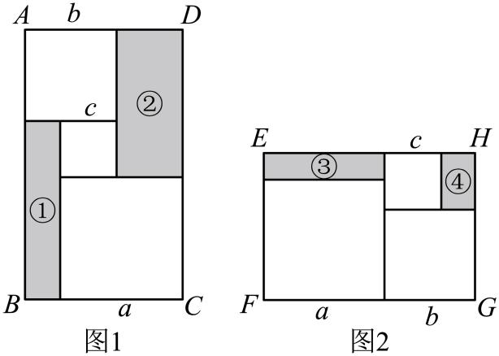
（1）若a=4，b=3，c=1，求长方形ABCD的面积；
【深入思考】
（2）若长方形ABCD的周长为24，长方形EFGH的周长为16，请算出C1，C2，C3的值；
【拓展提升】
（3）若C1+C2=m，C2−C3=n，求长方形EFGH的周长（结果用含m，n的代数式表示）．
【答案】（1）长方形ABCD的面积为48 （2） C1=12，C2=12，C3=4 （3） m−n
【分析】本题考查列代数式，整式的加减，属于中档题．
（1）先表示长方形长和宽，代入数值计算面积；
（2）通过周长公式列方程，相减得b+c的值，再代入求各部分周长；
（3）用C1、C2表示m、n，通过代数变形得出长方形EFGH 的周长为m−n．
【详解】解：（1）长方形ABCD的长为：a+b+c，长方形ABCD的宽为：a+b−c，
故长方形ABCD的面积为：(a+b+c)(a+b−c)，
a=4，b=3，c=1代入得，面积为：8×6=48，
∴长方形ABCD的面积为48；
（2）长方形ABCD的周长为24，
即2(a+b+c+a+b−c)=4a+4b=24，a+b=6①，
同理，长方形EFGH的周长为16，
即2(a+b+b+c)=2a+4b+2c=16，a+2b+c=8②，
②−①得b+c=2，
如图，C1=2(a+c+b−c)=2a+2b=12，
C2=2(a−c+b+c)=2a+2b=12，
C3=2(b+c−a+a)=2b+2c=4，
∴C1=12，C2=12，C3=4；
（3）由（2）可知：C1=2a+2b，C2=2a+2b，C3=2b+2c，
长方形EFGH的周长为2a+4b+2c，
∵C1+C2=m，C2−C3=n，
即4a+4b=m③，2a−2c=n④，
∴用③−④得，4a+4b−2a−2c=2a+4b+2c=m−n．
故长方形EFGH的周长用m，n表示为m−n．
【变式16-2】将图①中的长方形纸片剪成1号，2号，3号，4号正方形和5号长方形．

(1)设3号正方形的边长为x，4号正方形的边长为y，求1号，2号正方形的边长分别是多少？（用x，y的代数式表示）
(2)若图①中长方形的周长为48，试求3号正方形的边长；
(3)在（2）的情况下，若将这五个图形按图②的方式放入周长为100的长方形中，求阴影部分的周长．
【答案】(1)y−x，2x−y；
(2)6；
(3)88．
【分析】（1）观察图形，易知1号正方形的边长为4号正方形的边长减去3号正方形的边长，同理易知2号正方形的边长为3号正方形的边长减去1号正方形的边长；
（2）根据观察，可知图①中大长方形的长为3号正方形的边长与4号正方形的边长和，即：x+y，宽为2号正方形的边长与3号正方形的边长和，即：x+(2x−y)=3x−y，又知长方形的周长，即可求出x的值，从而得出3号正方形的边长；
（3）要求阴影部分的周长，可根据平移的性质得出阴影部分的周长即为长方形ABCD的周长，再利用大长方形的周长和大长方形的宽，进而可求出AB的长，从而解得阴影部分的周长．
【详解】（1）解：∵3号正方形的边长为x，4号正方形的边长为y，
∴1号正方形的边长为y−x， 2号正方形的边长为x−(y−x)=2x−y，
（2）解：长方形的长为：x+y，宽为：x+(2x−y)=3x−y，
∵长方形的周长为48，即2(x+y)+(3x−y)=8x=48，
∴x=6，
∵3号正方形的边长为x，
∴ 3号正方形的边长为6；
（3）解：如图：由平移知识可得阴影部分的周长为长方形ABCD的周长，
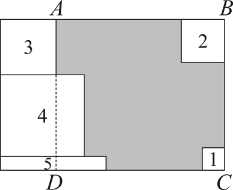
由（2）可知3号正方形的边长为6，
4号正方形的边长为y，
5号长方形的宽为2号正方形的边长减去1号正方形的边长的差即：2x−y−(y−x)=3x−2y=3×6−2y=18−2y，
∴AD=6+y+18−2y=24−y，
周长为100的长方形的长为：AB+6，宽为24−y，
∴2AB+6+(24−y)=100，
∴AB=20+y，
则长方形ABCD的周长为：
20+y+(24−y)×2=88，
即阴影部分的周长为88．
【点睛】本题考查了整式的加减应用，列代数式表示各线段的长从而可解决问题．
【变式16-3】小明家住房户型呈长方形，平面图如下（单位：米）．现准备铺设整个长方形地面，其中三间卧室铺设木地板，其它区域铺设地砖．（房间内隔墙宽度忽略不计）

（1）求a的值；
（2）请用含x的代数式分别表示铺设地面需要木地板和地砖各多少平方米；
（3）按市场价格，木地板单价为300元/平方米，地砖单价为100元/平方米．装修公司有A，B两种活动方案，如表：
活动方案 | 木地板价格 | 地砖价格 | 总安装费 |
A | 8折 | 8.5折 | 2000元 |
B | 9折 | 8.5折 | 免收 |
已知卧室2的面积为21平方米，则小方家应选择哪种活动，使铺设地面总费用（含材料费及安装费）更低？
【答案】（1）3；（2）木地板：75﹣7x，地砖：7x+53；（3）B种活动方案
【分析】（1）根据长方形的对边相等可得a+5=4+4，即可求出a的值；
（2）根据三间卧室铺设木地板，其它区域铺设地砖，可知将三间卧室的面积的和为木地板的面积，用长方形的面积-三间卧室的面积，所得的差为地砖的面积；
（3）根据卧室2的面积为21平方米求出x，再分别求出所需的费用，然后比较即可．
【详解】解：（1）根据题意，可得a+5＝4+4，
得a＝3；
（2）铺设地面需要木地板：
4×2x+a[10+6﹣（2x﹣1）﹣x﹣2x]+6×4＝8x+3（17﹣5x）+24＝75﹣7x，
铺设地面需要地砖：
16×8﹣（75﹣7x）＝128﹣75+7x＝7x+53；
（3）∵卧室2的面积为21平方米，
∴3[10+6﹣（2x﹣1）﹣x﹣2x]＝21，
∴3（17﹣5x）＝21，
∴x＝2，
∴铺设地面需要木地板：75﹣7x＝75﹣7×2＝61，
铺设地面需要地砖：7x+53＝7×2+53＝67，
A种活动方案所需的费用：61×300×0.8+67×100×0.85+2000＝22335（元），
B种活动方案所需的费用：61×300×0.9+67×100×0.85＝22165（元），
22335＞22165，
所以小方家应选择B种活动方案，使铺设地面总费用（含材料费及安装费）更低．
【点睛】本题考查了列代数式，长方形的面积，分别求出铺设地面需要木地板与地砖的面积，理解A，B两种活动方案是解题的关键．
【考点17 解特殊的一元一次方程】
【例17】（24-25八年级下·辽宁铁岭·月考）解方程：2006−x2005+2008−x2007=2010−x2009+2012−x2011
【答案】x=1
【分析】本题考查了解一元一次方程，先将原方程变形，整理即可求解．
【详解】解：2006−x2005+2008−x2007=2010−x2009+2012−x2011
将方程变形得：
2005+1−x2005+2007+1−x2007=2009+1−x2009+2011+1−x2011
即1−x2005+1−x2007=1−x2009+1−x2011
∴12005+12007−12009−120111−x=0
∴1−x=0，
x=1．
【变式17-1】（24-25六年级上·上海·期末）解方程1+35x−13−16−110−115−121−128−136−145−155=1211
【答案】x=53
【分析】本题主要考查了解一元一次方程，先把原方程变形为1+35x−13+16−110+115−121+128−−136+145−155=1211，进一步变形得到1+35x−1−12−12−13−13−14−14−15−155+211=1，再去括号解方程即可．
【详解】解：∵1+35x−13−16−110−115−121−128−136−145−155=1211，
∴1+35x−13+16−110+115−121+128−136+145−155=1211 ，
∴1+35x−12−16−112−120−155=1211，
∴1+35x−1−12−12−13−13−14−14−15−155+211=1，
∴1+35x−1+12−12+13−13+14−14+15−15=1，
∴35x=1，
∴x=53．
【变式17-2】（2025六年级上·全国·专题练习）解方程：|2x−1|+|x−2|=|x+1|．
【答案】12≤x≤2
【分析】本题主要考查的是含有绝对值符号的一元一次方程的解法．根据绝对值的性质分几种情况进行简化方程解答即可．
先找零点，为x=12，x=2，x=−1，再分段去绝对值．
【详解】解：当x≤−1时，
原方程可化为：1−2x+2−x=−1−x，
解得：x=2，不符合题意，舍去；
当−1<x<12时，
原方程可化为：1−2x+2−x=x+1，
解得：x=12，不符合题意，舍去，
当12≤x≤2时，
原方程可化为：2x−1−x+2=x+1，
解得：x取12≤x≤2的实数；
当x>2时，
原方程可化为：2x−1+x−2=x+1，
解得：x=2．不符合题意，舍去，
综上：12≤x≤2．
【变式17-3】解方程：
(1)0.3x+0.80.5−0.02x+0.30.3−1=0.8x−0.43
(2)x1×2+x2×3+⋯+x2023×2024=2023
【答案】(1)x=1
(2)x=2024
【分析】本题考查了解一元一次方程，两题有一定的难度．
（1）先利用分数的基本性质把分子分母的小数化为整数，再去分母化为系数为整数的方程，再去括号、移项、合并同类项即可求解；
（2）利用乘法分配律可化为11×2+12×3+⋯+12023×2024x=2023，再计算11×2+12×3+⋯+12023×2024的值；由于每一个分数可拆成分母相邻的两个分数的差，最后即可求得11×2+12×3+⋯+12023×2024的值，从而求解方程．
【详解】（1）解：原方程可化为：3x+85−2x+3030−1=8x−430，
去分母得：6(3x+8)−(2x+30)−30=8x−4，
整理得：8x=8，
解得：x=1；
（2）解：原式可化为：11×2+12×3+⋯+12023×2024x=2023
而11×2+12×3+⋯+12023×2024
=1−12+12−13+⋯+12022−12023+12023−12024
=1−12024
=20232024，
即20232024x=2023，
解得：x=2024．
【考点18 由一元一次方程的解求参数】
【例18】（25-26七年级上·山东日照·月考）定义：关于x的方程ax−b=0与方程bx−a=0（a，b均为不等于0的常数）称为互为“反对方程”，例如：方程2x−1=0与方程x−2=0互为“反对方程”．
(1)若关于x的方程6x−3=0与方程3x−c=0互为“反对方程”，则c=_______．
(2)若关于x的方程5x+3m+1=0与方程8x−n+2=0互为“反对方程”，求mn的值．
(3)若关于x的方程5x−c=0与其“反对方程”的解都是整数，求整数c的值．
【答案】(1)6
(2)−21
(3)±5
【分析】本题考查一元一次方程，理解新定义是解题的关键．
（1）根据“反对方程”的定义求解；
（2）根据“反对方程”的定义求出m和n的值，进而求积即可；
（3）根据“反对方程”的定义写出方程5x−c=0的“反对方程”，求出两个方程的解，根据它们的解均为整数， 可得答案．
【详解】（1）解：∵方程6x−3=0与方程3x−c=0互为“反对方程”，
根据定义，6x−3=0的“反对方程”应为3x−6=0，
∴c=6，
故答案为：6；
（2）解：∵方程5x+3m+1=0与方程8x−n+2=0互为“反对方程”，
即方程5x−−3m−1=0与方程8x−n−2=0互为“反对方程”，
∴−3m+1=8，n−2=5，
∴m=−3，n=7，
∴mn=−3×7=−21；
（3）解：方程5x−c=0的“反对方程”为cx−5=0，
解5x−c=0得：x=c5，
解cx−5=0得：x=5c，
∵方程5x−c=0与其“反对方程”的解都是整数，
∴c是5的倍数，也是5的因数，
∴c=±5．
【变式18-1】（25-26七年级上·山东济宁·月考）已知关于x的一元一次方程mx6−3=x−83（其中m为常数），
(1)佳佳同学在解这个方程时，去分母时忘记给左边的−3乘以6，最终解的x=1，求这个方程正确的解．
(2)若该方程的解为整数，且m为整数，求m的值．
【答案】(1)x=−213
(2)0，1，3，4
【分析】本题考查了一元一次方程的解和解一元一次方程，熟练掌握解方程的步骤是解题的关键．
（1）先将x=1代入mx−3=2x−8，求出m的值，然后代入mx6−3=x−83求解即可；
（2）根据解一元一次方程的步骤求出x=2m−2，再根据已知得m−2的值可能为−2，−1，1，2，进而即可得出m的值．
【详解】（1）解：根据题意，将x=1代入mx−3=2x−8，
得m−3=2×1−8，
解得m=−11，
将m=−11代入mx6−3=x−83，
得−11x6−3=x−83，
解得x=−213；
（2）mx6−3=x−83
去分母：mx−18=2x−8，
去括号：mx−18=2x−16，
移项、合并同类项：m−2x=2，
系数化为1：x=2m−2 m≠2，
∵该方程的解为整数，且m为整数，
∴m−2的值可能为−2，−1，1，2，
∴ m的值可能为：0，1，3，4．
【变式18-2】（25-26七年级上·湖南湘西·月考）已知一个关于x的一元一次方程cx+d=0（c≠0，d为常数），若这个方程的解恰好为x=c+d或x=−c−d，则称这个方程为“幸福方程”．例如：−2x+4=0的解为x=2，而−2+4=2，则方程−2x+4=0是“幸福方程”．
(1)下列方程是“幸福方程”的打“√”，不是“幸福方程”的打“×”；
①x−7=0（ ） ②−3x+1=−72（ ）
(2)若关于x的方程2x+m=0是“幸福方程”，求m的值；
(3)若关于x的方程ax−b=0是“幸福方程”，求关于y的方程ab−ay+5=−b+1y的解．
【答案】(1)×；√
(2)m=−43或m=−4
(3)当ba=a−b时，y=5；当ba=b−a且b=12时，y无解；当ba=b−a且b≠12时，y=51−2b
【分析】本题考查了新概念的理解，一元一次方程，正确理解题中的新概念，利用分类讨论的思想解题是关键．
（1）根据“幸福方程”的概念，逐一判断即可；
（2）根据“幸福方程”的概念，分类列方程，逐一解出即可；
（3）根据“幸福方程”的概念，列出式子，分类讨论，即可解答．
【详解】（1）解：①解x−7=0，可得x=7，1−7=−6，−6≠7，−1+7=6，6≠7，故方程x−7=0不是“幸福方程”；
②解−3x+1=−72，可得x=32，将−3x+1=−72变形可得−3x+92=0，−3+92=32，故方程−3x+1=−72是“幸福方程”，
故答案为：×；√；
（2）解：解2x+m=0，可得x=−m2，
∵关于x的方程2x+m=0是“幸福方程”，
∴2+m=−m2或−2−m=−m2，
解得m=−43或m=−4；
（3）解：解ax−b=0，可得x=ba，
∵关于x的方程ax−b=0是“幸福方程”，
∴a−b=ba或−a+b=ba，
①当a−b=ba时，
ab−ay+5=−b+1y可化简为−by+5=−b+1y，
则y=5，
②当−a+b=ba，
ab−ay+5=−b+1y可化简为by+5=−b+1y，
变形可得2b−1y=−5，
当b=12时，等式左边等于0，等式右边等于−5，故该方程无解；
当b≠12时，y=51−2b；
综上可得，当ba=a−b时，y=5；当ba=b−a且b=12时，y无解；当ba=b−a且b≠12时，y=51−2b．
【变式18-3】（24-25七年级上·湖南长沙·月考）定义：若关于x的一个方程为x=a（a为常数），关于y的一个方程的解为y=b（b为常数），且a，b满足a−b=m（m为正数），则称这两个方程是“m差解友好方程”，
例如：方程2x+1=5的解是x=2，方程y−1=0的解是y=1，因为2−1=1，所以方程2x+1=5与方程y−1=0是“1差解友好方程”．
(1)请通过计算判断关于x的方程3x−2=4与关于y的方程2y=3y+2是不是“4差解友好方程”；
(2)如果关于x的方程x−x+3k2=2k−1与关于y的方程y−3y−1=2（k为常数）是“1差解友好方程”，求k的值；
(3)关于x，y的两个方程3x+1=2t−1与方程2y−tn=n（t，n为常数），若对于任何有理数t，都使得它们是“2差解友好方程”，求n的值．
【答案】(1)是，理由见解析
(2)k=12或k=314
(3)n=43
【分析】本题考查的是新定义的含义，一元一次方程的解法，绝对值方程的应用；
（1）由方程3x−2=4的解是x=2，方程2y=3y+2的解是y=−2，再利用新定义的含义计算并判断即可；
（2）分别解方程x−x+3k2=2k−1，y−3y−1=2，再结合新定义可得：7k−2−12=1，即7k−52=1，进一步求解即可；
（3）分别解方程3x+1=2t−1，2y−tn=n，可得2t−43−tn+n2=2，再进一步求解即可．
【详解】（1）解：方程3x−2=4的解是x=2；
方程2y=3y+2的解是y=−2．
根据题意可得x−y=2−−2=4，
∴这两个方程是“4差解友好方程”；
（2）解：∵x−x+3k2=2k−1，
∴2x−x−3k=4k−2，
解得：x=7k−2，
∵y−3y−1=2，
∴y−3y+3=2，
∴−2y=−1，
解得：y=12，
∵关于x的方程x−x+3k2=2k−1与关于y的方程y−3y−1=2（k为常数）是“1差解友好方程”
∴7k−2−12=1，即7k−52=1，
∴7k−52=1或7k−52=−1，
解得：k=12或k=314；
（3）解：∵3x+1=2t−1，
∴3x+3=2t−1，
∴3x=2t−4，
解得：x=2t−43，
∵2y−tn=n，
∴2y=tn+n，
解得：y=tn+n2，
∵关于x，y的两个方程3x+1=2t−1与方程2y−tn=n（t，n为常数），对于任何有理数t，都使得它们是“2差解友好方程”，
∴2t−43−tn+n2=2，
∴4t−8−3tn−3n=12，
∴4−3nt−8−3n=12，
∴4−3n=0，
解得：n=43．
【考点19 一元一次方程的实际应用】
【例19】（24-25七年级下·全国·假期作业）A、B两市相距176千米，两市之间一处因山体滑坡导致连接这两市的公路受阻，甲、乙两个工程队接到指令，要求于早上7点，分别从A、B两地同时出发赶往滑坡地点疏通公路．甲队于9点赶到并立即开工半小时后，乙队也赶到，并立即投入抢修工作，此时甲队已完成了全部任务的124．
(1)如果滑坡受损公路长1千米，甲队行进的速度是乙队的32倍多5千米，求甲、乙两队的行进的速度各是多少？
(2)如果下午3点两队就完成公路疏通任务，胜利会师，那么若由乙队单独疏通这段公路时，需要多少时间才能完成任务？
【答案】(1)甲队：50千米/小时，乙队：30千米/小时
(2)11小时
【分析】本题主要考查工程问题，掌握工程问题的公式以及找准等量关系是解题的关键．
（1）设乙队的行进速度是x千米/小时，则甲队的行进速度是32x+5千米/小时．从早上7点到9点，经历了2小时，甲开工半小时后乙才到，说明乙走了2.5小时，由于受损公路长1千米，用甲、乙走的路程和=两市相距的距离再减去受损公路长，据此即可列出方程，再求解即可．
（2）由于从上午9点到下午3点总共经历了6小时，最开始甲队工作0.5小时，完成了总量的124，根据工作效率=工作总量÷工作时间，用124÷0.5求出甲的效率．设乙的效率为y，由于甲队工作了6小时，乙队工作的时间是：6−0.5=5.5（小时），根据工作效率×工作时间=工作总量，甲队工作量＋乙队工作量=1，据此列方程即可求出乙队的效率，再用1除以乙队的效率即可求出时间．
【详解】（1）解：设乙队的行进速度是x千米/小时，则甲队的行进速度是32x+5千米/小时，
9:00−7:00=2（小时），
2小时+0.5小时=2.5小时，
2×32x+5+2.5x=176−1
2×32x+2×5+2.5x=175
3x+10+2.5x=175
5.5x=175−10
5.5x=165
x=165÷5.5
x=30，
32×30+5=45+5=50（千米/小时），
答：甲队的行进速度是50千米/小时，乙队的行进速度是30千米/小时．
（2）124÷0.5=124÷12=124×2=112，
根据题意，设乙的工作效率为y，
112×6+6−0.5y=1
0.5+5.5y=1
5.5y=1−0.5
5.5y=0.5
y=0.5÷5.5
y=111
1÷111=11（小时），
答：乙队单独疏通这条公路的效率是11小时．
【变式19-1】（25-26七年级上·江西南昌·月考）某书店为促销经典名著，按购买数量分三部分制定阶梯售价，如下表：
购买数量 | 单价 |
不超过200本的部分 | 12元/本 |
超过200本但不超过500本的部分 | 9元/本 |
超过500本的部分 | 6元/本 |
(1)若购买350本这种经典名著，需花费___________元；若购买650本这种经典名著，需花费___________元；
(2)某学校为丰富图书馆藏书，花了2517元从该书店购买这种经典名著，则该校购买了多少本经典名著？
(3)该校教务处先为初一学生购买一批经典名著作为课外读物，后来又为初二学生追加购买了一批，两次共购买了900本，其中第一次购买的数量超过450本，且小于700本，两次共花费9150元，求第一次购买的数量．
【答案】(1)3750；6000
(2)213本
(3)第一次购买的数量为550本
【分析】本题考查了有理数混合运算的实际应用，一元一次方程的应用．
（1）根据售价表计算即可；
（2）求出购买量位于第二阶梯，用总价减去第一阶梯的总价，再除以第二阶梯的单价即可；
（3）设第一次购买x本，第二次购买900−x本，分情况求解即可．
【详解】（1）解：若购买350本这种经典名著，需花费200×12+350−200×9=3750元；
若购买650本这种经典名著，需花费200×12+500−200×9+650−500×6=6000元；
故答案为：3750；6000；
（2）解：200×12=2400元，
200×12+(500−200)×9=5100元，
因为2400<2517<5100，
所以购买数量在200本到500本之间
超过200本的部分花费： 2517−2400=117（元），对应数量为117÷9=13（本）．
总数量： 200+13=213（本）；
（3）解：设第一次购买x本，第二次购买900−x本．
分情况计算：
若450<x≤500，则第二次400≤900−x<450，花费为：
第一次：200×12+x−200×9；
第二次：200×12+900−x−200×9；
总花费方程：2400+9x−1800+2400+9×700−x=9150，化简后等式不成立，排除；
若x>500，则第二次900−x<400（且>200），花费为：
第一次：200×12+300×9+x−500×6；
第二次：200×12+900−x−200×9；
总花费方程：2400+2700+6x−3000+2400+9×700−x=9150，
解得x=550，符合条件．
答：第一次购买的数量为550本．
【变式19-2】（24-25七年级下·新疆克拉玛依·期末）克拉玛依市准噶尔商场经销的A，B两种商品，A种商品每件售价60元，利润为20元；B种商品每件进价50元，售价80元．（利润=售价-进价，利润率=利润进价×100%）
打折前一次性购物总金额 | 优惠措施 |
少于等于450元 | 不优惠 |
超过450元，但不超过600元 | 按总售价打九折 |
超过600元 | 其中600元部分八折优惠，超过600元的部分打七折优惠 |
(1)A种商品每件进价为___________元，每件B种商品利润率为___________；
(2)若准噶尔商场同时购进A，B两种商品共50件，恰好总进价为2100元，求购进A种商品多少件？
(3)在“元旦”期间，准噶尔商场对A，B两种商品进行如下的优惠促销活动：按上述优惠条件，若小华一次性购买A，B商品实际付款522元，求小华在该商场打折前一次性购物总金额？
【答案】(1)40；60%
(2)A种商品40件
(3)580元或660元
【分析】本题考查了一元一次方程的应用，解题的关键是：
（1）设A种商品每件进价为a元，利用利润=售价-进价，即可得出关于a的一元一次方程，解之即可求出A种商品每件的进价，再利用利润率=利润÷进价×100%，即可求出每件B种商品利润率；
（2）设购进A种商品x件，则购进B种商品50−x件，由题意得40x+50(50−x)=2100，再解方程即可；
（3）设若没有优惠促销，小华在该商场购买同样商品要付x元，分450<y≤600及y>600两种情况考虑，根据该商场给出的优惠条件及小华一次性购买A，B商品实际付款522元，即可得出关于x的一元一次方程，解之即可得出结论．
【详解】（1）解：设A种商品每件进价为a元，
依题意得：60−a=20， 解得：a=40，
∴A种商品每件进价为40元，
每件B种商品利润率为80−5050×100%=60%．
故答案为：40；60%．
（2）设购进A种商品x件，则购进B种商品50−x件，
由题意得40x+50(50−x)=2100，
解得：x=40．
即购进A种商品40件，B种商品10件．
（3）设小华打折前应付款y元．
当打折前购物金额超过450元，但不超过600元，即450<y≤600，
由题意得0.9y=522，解得y=580，
当打折前购物金额超过600元，即y>600，
600×0.8+(y−600)×0.7=522，
解得：y=660．
综上，小华在该商场购买同样商品要付580元或660元．
【变式19-3】（25-26七年级上·福建泉州·期末）如图，甲、乙两台搬运机器人分别固定在数轴型仓库的8号货架（甲初始位置）和13号货架（乙初始位置），货架编号沿数轴正方向递增，机器人仅沿数轴正/负方向移动，每次移动以“货架间距”为单位（1个单位对应1个货架间距）．系统每次下达1条运输指令，指令类型分为三类，各类指令对应的机器人移动规则唯一且固定：
①协同搬运指令：甲向正方向移动2个单位，乙向负方向移动2个单位；
②甲优先搬运指令：甲向正方向移动2个单位，乙向正方向移动1个单位；
③乙优先搬运指令：甲向负方向移动2个单位，乙向负方向移动1个单位．
(1)从初始位置出发，仅执行1条“协同搬运指令”后，甲、乙两台机器人之间的货架间距为 个单位长度；
(2)从初始位置出发，累计执行k条运输指令
①若k=8，且两台机器人只执行“优先搬运指令”，设“甲优先搬运指令”执行次数为n，甲最终停留的货架编号为 （用n的代数式表示）；
②若“协同搬运指令”次数与“优先搬运类指令”总次数的比为1:1，设“甲优先搬运指令”执行次数为n，最终停留的货架编号为 （用k、n的代数式表示）；若此时甲、乙的位置间距为3个货架单位，求所有符合条件的k值及对应的各类指令执行次数．
【答案】(1)17
(2)①4n−24；②4n−8；所有符合条件的k值为8或12或16；当n=3，k=12时，“协同搬运指令”次数为6，“甲优先搬运指令”执行次数为3，“乙优先搬运指令”执行次数为3；当n=0，k=16时，“协同搬运指令”次数为8，“甲优先搬运指令”执行次数为0，“乙优先搬运指令”执行次数为8；当n=3，k=8时，“协同搬运指令”次数为4，“甲优先搬运指令”执行次数为3，“乙优先搬运指令”执行次数为1．当n=0，k=12时，“协同搬运指令”次数为6，“甲优先搬运指令”执行次数为0，“乙优先搬运指令”执行次数为6
【分析】（1）根据“协同搬运指令”的移动方式列式求解即可；
（2）①首先得到“乙优先搬运指令”执行次数为k−n，然后列式求解即可；
②首先表示出“协同搬运指令”次数与“优先搬运类指令”总次数都为k2，“乙优先搬运指令”执行次数为k2−n，然后表示出甲最终停留的货架编号和乙最终停留的货架编号，然后根据甲、乙的位置间距为3个货架单位列出方程求解即可．
【详解】（1）解：∵从初始位置出发，仅执行1条“协同搬运指令”
∴甲移动后表示的数为−8+2=−6，乙移动后表示的数为13−2=11，
∴11−−6=11+6=17
∴甲、乙两台机器人之间的货架间距为17个单位长度，
故答案为：17；
（2）解：①设“甲优先搬运指令”执行次数为n，
∴“乙优先搬运指令”执行次数为8−n，
∴甲最终停留的货架编号为−8+2n−28−n=4n−24，
故答案为：4n−24；
②∵“协同搬运指令”次数与“优先搬运类指令”总次数的比为1:1，
∴“协同搬运指令”次数与“优先搬运类指令”总次数都为k2
∵设“甲优先搬运指令”执行次数为n，
∴“乙优先搬运指令”执行次数为k2−n，
∴甲最终停留的货架编号为−8+2×k2+2n−2k2−n=4n−8；
∴乙最终停留的货架编号为13−2×k2+n−k2−n=2n−32k+13；
∵此时甲、乙的位置间距为3个货架单位，
∴4n−8−2n−32k+13=3
整理得，2n+32k−21=3
∵k和n都是正整数，且k2>n，
∴k>2n
∴当2n+32k−21=3时，整理得，k=16−43n
∴n=3，k=12或n=0，k=16，
∴“协同搬运指令”次数为k2=122=6，“甲优先搬运指令”执行次数为3，“乙优先搬运指令”执行次数为k2−n=122−3=3；
“协同搬运指令”次数为k2=162=8，“甲优先搬运指令”执行次数为0，“乙优先搬运指令”执行次数为k2−n=162−0=8；
当2n+32k−21=−3时，整理得，k=12−43n
∴n=3，k=8或n=0，k=12，
∴“协同搬运指令”次数为k2=82=4，“甲优先搬运指令”执行次数为3，“乙优先搬运指令”执行次数为k2−n=82−3=1；
“协同搬运指令”次数为k2=122=6，“甲优先搬运指令”执行次数为0，“乙优先搬运指令”执行次数为k2−n=122−0=6；
综上所述，所有符合条件的k值为8或12或16；
当n=3，k=12时，“协同搬运指令”次数为6，“甲优先搬运指令”执行次数为3，“乙优先搬运指令”执行次数为3；
当n=0，k=16时，“协同搬运指令”次数为8，“甲优先搬运指令”执行次数为0，“乙优先搬运指令”执行次数为8；
当n=3，k=8时，“协同搬运指令”次数为4，“甲优先搬运指令”执行次数为3，“乙优先搬运指令”执行次数为1．
当n=0，k=12时，“协同搬运指令”次数为6，“甲优先搬运指令”执行次数为0，“乙优先搬运指令”执行次数为6；
【点睛】此题考查了一元一次方程的应用，数轴上两点之间的距离，数轴动点问题，列代数式等知识，解题的关键是正确读懂题意．
【考点20 与线段（数轴）有关的定值问题】
【例20】（25-26七年级上·四川成都·期末）如图，已知点A、B、C是数轴上三点，O为原点．点C对应的数为6，BC=4，AB=12．
动点P、Q分别同时从A、C出发，分别以每秒6个单位和4个单位的速度沿数轴正方向运动．M为AP的中点，N为CQ的中点，设运动时间为tt>0．
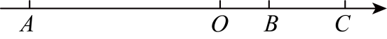
(1)求点A、点B对应的数；
(2)t为何值时，OM=2BN；
(3)当点P在点C的左侧时，是否存在常数m使得mPQ−MN为定值，若存在，请求出m的值，若不存在，请说明理由．
【答案】(1)−10，2；
(2)27；
(3)m=12．
【分析】本题主要考查了数轴上的动点问题，涉及到线段长度、中点坐标、绝对值方程以及定值问题，熟练掌握数轴上点的运动规律和相关代数运算技巧是解题的关键．
（1）根据点C的数和BC的长度求出点B的数，再根据AB的长度求出点A的数．
（2）先表示出运动t秒后点P、Q的位置，进而得出M、N的位置，再根据OM=2BN列方程求解．
（3）先表示出PQ和MN的长度，再代入mPQ−MN，根据定值的条件求出m的值．
【详解】（1）解：∵点C对应的数为6，BC=4，
∴点B对应的数为6−4=2，
∵AB=12，
∴点A对应的数为2−12=−10；
（2）解：运动t秒后，点P对应的数为−10+6t，点Q对应的数为6+4t，
∵M为AP的中点，
∴点M对应的数为−10+(−10+6t)2=−10+3t，
∵N为CQ的中点，
∴点N对应的数为6+(6+4t)2=6+2t，
∴OM=|−10+3t|，BN=|6+2t−2|=|4+2t|=2t+4（t>0），
∵OM=2BN，
∴|−10+3t|=2(2t+4)，
当−10+3t≥0，即t≥103时，
3t−10=4t+8，
t=−18（舍去），
当−10+3t<0，即t<103时，
10−3t=4t+8，
7t=2，
t=27，
∴所以t为27时，OM=2BN；
（3）解：PQ=|(6+4t)−(−10+6t)|=|16−2t|=16−2t（点P在点C左侧，16−2t>0），
MN=|(6+2t)−(−10+3t)|=|16−t|=16−t，
mPQ−MN=m(16−2t)−(16−t)=16m−2mt−16+t=(1−2m)t+16m−16，
∵mPQ−MN为定值，
∴1−2m=0，
解得m=12，
∴存在常数m=12使得mPQ−MN为定值．
【变式20-1】（24-25七年级上·湖北武汉·期末）如图，点A，B，C，D是同一直线上从左到右依次排列的四点，AB=a，CD=b，且a，b满足：a−6+b−32=0，BC=15．
(1)a= ，b= ；
(2)线段AB以2个单位长度/秒的速度向右匀速运动，同时线段CD以1个单位长度/秒的速度向左匀速运动．
①求运动多少秒时，线段AB，CD重合的长度为2；
②当点B和C重合时，线段CD立即以原来2.5倍的速度向右运动，线段AB的运动状态不变，若线段CD向右运动过程中，式子2AC+mBD的值为定值n，请求m和n的值．
【答案】(1)6；3
(2)①173秒或223秒；②m=−2，n=6
【分析】本题主要考查了非负数的性质，两点间的距离，一元一次方程的应用，熟练运用数轴上两点之间的距离，分类讨论，是解题关键．
（1）根据非负数的性质即可求得答案；
（2）①设运动时间为t秒，当BC=2时，根据BC=15，得2t+t=15+2，解得t=173；当AD=2时，得2t+t+2=6+3+15，解得t=223；②设相遇后运动时间为x秒，则BC=0.5x，根据2AC+mBD=3m+12+0.5m+1x为定值n，得0.5m+1=0，得m=−2，n=6．
【详解】（1）解：∵a−6+b−32=0，且a−6≥0，b−32≥0，
∴a−6=0，b−32=0，
∴a=6，b=3；
故答案为6，3；
（2）解：①设运动时间为t秒，
当BC=2时，
∵点AB经过的路程为2t，点CD经过的路程为t，BC=15，
∴2t+t=15+2，
解得t=173；
当AD=2时，
∵AB=6，CD=3，
∴2t+t+2=6+3+15，
解得t=223；
故运动173秒或223秒时，线段AB，CD重合的长度为2；
②设相遇后运动时间为x秒，
∵AB运动路程为2x，CD运动路程为2.5x，
则BC=2.5x−2x=0.5x，
∴AC=AB+BC=6+0.5x，BD=BC+CD=0.5x+3，
∴2AC+mBD=26+0.5x+m0.5x+3=3m+12+0.5m+1x，
∵2AC+mBD的值为定值n，
∴0.5m+1=0，
∴m=−2，
∴n=3m+12=6．
故m=−2，n=6．

【变式20-2】（24-25七年级上·湖北武汉·期末）如图，已知C，D是线段AB上两点；E，F两点分别是线段AC，BD上的点，且AE=1nAC，BF=1nBD；M，N两点分别是线段AD，BC上的点，且AM=1nAD，BN=1nBC．

(1)如图1，已知AB=12，CD=9，若n=2，请直接写出线段EF的长度：________；
(2)如图2，在（1）的条件下，若n=3，求线段EF和MN的长度．
(3)如图3，若n=4，下列两个结论，①EF+MNAB是定值，②EF−MNAB是定值，其中只有一个是正确的，请直接写出正确结论的序号：_______，并直接写出其定值：_______．

【答案】(1)10.5
(2)EF=11；MN=5
(3)①；32
【分析】本题考查了线段的中点定义，线段的和差；能根据所求线段或等式用线段和差表示，并由线段中点进行等量转换是解题的关键．
（1）若n=2， 则AE=12AC，BF=12BD， 根据题意得出AC+BD=3，可得AE+BF=12AC+BD=32，
再根据EF=AB−AE+BF，即可求解．
（2）若n=3，则AE=13AC，BF=13BD，AM=13AD，BN=13BC，根据题意得出AC+BD=3，AE+BF=13AC+BD=1，算出EF=AB−AE+BF=12−1=11；再根据AM+BN=13AB+CD=7，即可算出MN=AB−AM+BN．
（3）若n=4，则AE=14AC，BF=14BD，AM=14AD，BN=14BC，根据题意得出AC+BD=AB−CD，表示出AE+BF=14AB−CD，得出EF=34AB+14CD；再根据AM+BN=14AB+CD，得出MN=34AB−14CD，代入①和②即可求解．
【详解】（1）解：若n=2，
则AE=12AC，BF=12BD，
∵AC+BD=AB−CD=12−9=3，
∴AE+BF=12AC+BD=32，
∴EF=AB−AE+BF=12−32=10.5，
故答案为：10.5．
（2）解：若n=3，
则AE=13AC，BF=13BD，AM=13AD，BN=13BC，
∴AC+BD=AB−CD=12−9=3，
∴AE+BF=13AC+BD=1，
∴EF=AB−AE+BF=12−1=11；
∵AM+BN=13AD+BC=13AC+CD+CD+BD=13AB+CD=7，
∴MN=AB−AM+BN=12−7=5．
（3）解：若n=4，
则AE=14AC，BF=14BD，AM=14AD，BN=14BC，
∵AC+BD=AB−CD，
∴AE+BF=14AC+BD=14AB−CD，
∴EF=AB−14AB−CD=34AB+14CD；
∵AM+BN=14AD+BC=14AC+CD+CD+BD=14AB+CD，
∴MN=AB−AM+BN=AB−14AB+CD=34AB−14CD．
∴①EF+MNAB=34AB+14CD+34AB−14CDAB=32，故①是定值，值为32
②EF−MNAB=34AB+14CD−34AB−14CDAB=12CDAB=CD2AB不是定值；
故答案为：①，32．
【变式20-3】如图，已知直线l上有两条可以左右移动的线段：AB=m,CD=n，且m，n满足m−4+n−82=0，点M，N分别为AB,CD中点．
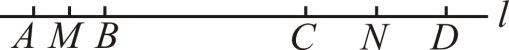
(1)求线段AB,CD的长；
(2)线段AB以每秒4个单位长度向右运动，线段CD以每秒1个单位长度也向右运动．若运动6秒后，MN=4，求此时线段BC的长；
(3)若BC=24，将线段CD固定不动，线段AB以每秒4个单位速度向右运动，在线段AB向右运动的某一个时间段t内，始终有MN+AD为定值．求出这个定值，并直接写出t在哪一个时间段内．
【答案】(1)线段AB的长是4，线段CD的长是8
(2)10或2；
(3)当7.5≤t≤9时，MN+AD为定值，定值为6
【分析】（1）根据非负数的性质即可得到结论；
（2）设点B表示的数为x，点C表示的数为y,则点M表示的数是x−2，点N表示的数是y+4，运动后点M表示的数是x−2+24=x+22，点N表示的数是y+4+6=y+10，由MN=4解得x−y=−8或x−y=−16，运动后BC=x+24−y+6=x−y+18，即可求出答案；
（3）根据题意分类讨论于是得到结果．
【详解】（1）解：∵m−4+n−82=0，
∴m−4=0，n−82=0，
∴m=4，n=8，
∴AB=4，CD=8，
即线段AB的长是4，线段CD的长是8；
（2）解：设直线l为数轴，
∵AB=4，CD=8，
∴MB=12AB=2，CN=12CD=4，
设点B表示的数为x，点C表示的数为y,
∵点M，N分别为AB,CD中点．
∴点M表示的数是x−2，点N表示的数是y+4，
运动后点M表示的数是x−2+24=x+22，点N表示的数是y+4+6=y+10，
∵MN=4，
∴x+22−y+10=4
解得，x−y=−8或x−y=−16
运动后BC=x+24−y+6=x−y+18
∴BC=x−y+18=−8+18=10或BC=x−y+18=−16+18=2
即线段BC的长为10或2；
（3）解：∵BC=24，AB=4，CD=8，
∴MN=BC+12AB+12CD=24+2+4=30，AD=BC+AB+CD=24+4+8=36，
∵线段CD固定不动，线段AB以每秒4个单位速度向右运动，
∴运动t秒后，MN=30−4t，AD=36−4t，
当0≤t<7.5时，MN+AD=30−4t+36−4t=66−8t；
当7.5≤t≤9时，MN+AD=4t−30+36−4t=6；
当t>9时，MN+AD=4t−30+4t−36=8t−66；
故当7.5≤t≤9时，MN+AD为定值，定值为6．
【点睛】本题考查非负数的性质，一元一次方程的应用，线段的和差关系，以及数轴上的动点问题，解题的关键是掌握分类讨论思想．
【考点21 与线段（数轴）有关的动点问题】
【例21】（25-26七年级上·吉林长春·期末）如图，点C在线段AB上，AC=2cm，AB=6cm．点P以1cm/s的速度从点A沿线段AB向点B运动；同时点Q以2cm/s的速度从点B沿线段BA向点A运动，到达A点立即原速返回点B，当点P运动到点B时，点P、Q都停止运动．设点P运动的时间为t(s)．
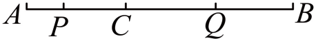
(1)当t=1时，求PQ的长；
(2)用含t的代数式表示AQ的长；
(3)当点C为PQ中点时，求t的值；
(4)若点D是线段AQ的中点，在整个运动过程中，是否存在某个时间段，使DP的长度保持不变？如果存在，求出DP的长度并写出其对应的时间段；如果不存在，请说明理由．
【答案】(1)3
(2)当0≤t<3时，AQ=6−2t；当3≤t≤6时，AQ=2t−6
(3)t=103
(4)DP=3，3≤t≤6
【分析】（1）求出当t=1时，AP=1， BQ=2，然后列式求解即可；
（2）首先求出点Q到达点A的时间为6÷2=3s，点P到达点B的时间为6÷1=6s，然后分两种情况列式即可；
（3）根据题意分两种情况讨论，分别列方程求解即可；
（4）根据题意分两种情况讨论，分别表示出DP求解即可．
【详解】（1）当t=1时，AP=1， BQ=2
∴PQ=AB−AP−BQ=6−1−2=3；
（2）∵AB=6cm，点Q以2cm/s的速度从点B沿线段BA向点A运动，到达A点立即原速返回点B，点P以1cm/s的速度从点A沿线段AB向点B运动，
∴点Q到达点A的时间为6÷2=3s，点P到达点B的时间为6÷1=6s
∴当0≤t<3时，QB=2t
∴AQ=AB−BQ=6−2t；
当3≤t≤6时，AQ=2t−AB=2t−6；
（3）当0≤t<3时，AP=t，AQ=6−2t，
∵点C为PQ中点，
∴AC=AP+AQ2，即2=t+6−2t2
解得t=2，（此时点C、P、Q三点重合，舍去）；
当3≤t≤6时，AP=t，AQ=2t−6，
∵点C为PQ中点，
∴AC=AP+AQ2，即2=t+2t−62，
解得t=103
综上所述，t=103；
（4）当0≤t<3时，AQ=6−2t
∵点D是线段AQ的中点，
∴AD=12AQ=3−t
∴DP=AP−AD=t−3−t=2t−3
∴DP的长度随t的变化而变化
当3≤t≤6时，AQ=2t−6
∴AD=12AQ=t−3
∴DP=AP−AD=t−t−3=3，是定值
∴当3≤t≤6时，DP的长度不变，为3．
【点睛】本题考查一元一次方程的应用，两点之间距离的概念，中点定义，线段和差计算等，运用分类讨论思想是解题的关键．
【变式21-1】（25-26七年级上·山东济南·期末）数轴是初中数学的一个重要工具，利用数轴可以将数与形完美地结合．研究数轴我们发现了许多重要的规律：若数轴上点A，点B表示的数分别为a，b，则A，B两点之间的距离AB=a−b（当a>b时，AB=a−b；当a<b时，AB=b−a），线段AB的中点表示的数12a+b．
如图，数轴上点A，点B，点C表示的数分别为−6，2，3，点P，Q，R分别从A，B，C出发沿数轴的正方向移动，其中点P的速度为每秒4个单位长度，点Q的速度为每秒2个单位长度，点R的速度为每秒m个单位长度，线段PQ的中点为D，运动时间为t．
(1)当t=2时，PQ=______；
(2)试用含t的代数式表示点D表示的数；
(3)若在运动过程中，点R始终在点D的右边，且R，D两点间的距离保持不变，试求m的值和RD的长度；
(4)当OP=4OD时，直接写出t的值．
【答案】(1)4
(2)3t−2
(3)m的值为3，RD的长度为5
(4)t的值为14或78
【分析】本题考查了数轴两点间的距离和一元一次方程的应用，理解题意是解决本题的关键．
（1）根据题意，将t=2进行代入求解即可；
（2）根据中点坐标公式求解即可；
（3）先根据题意求出点R表示的数，再求出RD，再根据R，D两点间的距离保持不变进行求解即可；
（4）先求出OP和OD，再根据OP=4OD进行分情况讨论求解即可．
【详解】（1）解：由题意得，当t=2时，点P表示的数：−6+4t=−6+4×2=2；
点Q表示的数：2+2t=2+2×2=6；
∴PQ=6−2=4
故答案为：4；
（2）解：由（1）得，点P表示的数为−6+4t，点Q表示的数为2+2t，
∴线段PQ的中点D表示的数为：−6+4t+2+2t2=−4+6t2=3t−2；
（3）解：由题意得，点R表示的数：3+mt；
∴RD=3+mt−3t−2=m−3t+5．
∵RD距离保持不变，
∴t的系数为0，
∴m−3=0
解得m=3，
此时RD=5；
（4）解：由题意得，OP=−6+4t，OD=3t−2，
∵OP=4OD，
∴4t−6=43t−2，
分情况讨论：当t<23时：6−4t=42−3t，
解得t=14；
当23≤t<32时：6−4t=43t−2，
解得t=78；
当t≥32时：4t−6=43t−2，
解得t=14<32，故此情况无解．
综上所述，t的值为14或78．
【变式21-2】（24-25七年级上·湖北武汉·期末）如图，线段AB=16，点A在点B的左边．
(1)点C在直线AB上，AC=3BC，则AC= ．
(2)点D在线段AB上，AD=4．点P从点D出发，以每秒4个单位长度的速度沿直线AB向右运动，设运动时间为t秒．
①点M是线段AP的中点，点N是线段DP的中点．当t为何值时，BP=MN？
②若点P从点D出发时，以每秒4个单位长度的速度沿直线AB向右运动，点Q从点B同时出发，以每秒1个单位长度的速度沿直线AB向右运动．点P与点Q相遇后，点P保持原来运动方向不变，速度变为2个单位长度/秒，点Q改变原来的运动方向沿直线AB向左运动，且速度变为3个单位长度/秒．在整个运动过程中，当2PQ−BP=DP时，t= ．
【答案】(1)12或24
(2)①2.5或3.5；②2或223
【分析】本题考查了一元一次方程、路程问题，数形结合思想，将几何问题转化为方程模型，对知识的综合应用的要求比较高．
（1）点C在直线AB上，故分两种情况：①点C在点B左侧，②点C在点B右侧，再根据AC=3BC，AB=16求解；
（2）①以点A为原点建立数轴，用含t的代数式表示出BP,MN，列方程求t；
②分点P与点Q相遇前和相遇后两种情况，用含t的代数式表示出PQ,BP,DP，再由2PQ−BP=DP列一元一次方程，解方程即可．
【详解】（1）解：∵AC=3BC，
∴①当点C在点B左侧时，AC=AB−BC=AB−14AB=12，
②当点C在点B右侧时，AB=AC−BC=2BC=16，
∴BC=8，
∴AC=3BC=24；
故答案为：12或24；
（2）解：①令点A表示的数为0，则点B表示的数为16，点D表示的数为4，点M表示的数为2+2t，点N表示的数为4+2t，
∵不确定点P在点B左侧还是右侧，
∴BP=4+4t−16=4t−12,MN=2，
∴4t−12=2，
解得：t=2.5或t=3.5，
答：当t为2.5秒或3.5秒时，BP=MN；
②当点P与点Q相遇时，DP=BD+BQ，
即4t=12+t，
解得：t=4，
分两种情况：
Ⅰ．点P与点Q相遇前即0≤t<4时，
DP=4t，PQ=t+16−4t+4=12−3t，BP=4t−12，
当2PQ−BP=DP时，24−6t−4t−12=4t，
解得：t=2或t=187（不合题意，舍去）；
Ⅱ．点P与点Q相遇后即t>4时，
DP=16+2t−4=2t+8，
PQ=2t−4+3t−4=5t−20，
BP=4+2t−4=2t−4，
当2PQ−BP=DP时，10t−40−2t−4=2t+8，
解得：t=223，
故答案为：2或223．
【变式21-3】（24-25七年级上·云南曲靖·期末）如图，∠AOB的边OA上有一动点P，从距离O点24cm的点M处出发，沿线段MO，射线OB运动，点P在线段MO上速度为4cm/s．在射线OB上速度为5cm/s；动点Q从点O出发，沿射线OB运动，速度为2cm/s，点P、Q同时出发，设运动时间是ts．

(1)当点P在MO上运动时，t为何值，能使OP=OQ？
(2)若点Q运动到距离O点18cm的点N处停止，在点Q停止运动前，点P能否追上点Q？如果能，求出t的值；如果不能，请说出理由；
(3)若P、Q两点不停止运动，t为何值时，它们相距14cm？（若点P在线段MO上，点Q在射线OB上，则P、Q两点的距离为：点P到点O的距离与点Q到点O的距离之和）
【答案】(1)t=4s
(2)不能，见解析
(3)t=5或t=443
【分析】本题考查的是线段的和差运算，一元一次方程的应用；
（1）根据题意可得OP=24−4t,OQ=2t，然后由OP=OQ可得关于t的方程，解方程即得答案；
（2）先计算点Q停止运动时用的时间，然后求出点P运动的时间，再比较即得结论；
（3）当P在线段OM上，Q在射线OB上时，它们相距14 cm，根据题意得：当0<t≤6时，PQ=PO+OQ=24−4t+2t=14，当P、Q均在射线OB上时，它们相距14 cm，根据题意得：当t>6时，PQ=OP−OQ=14，由此构建关于t的方程求解即可．
【详解】（1）解：运动时间是ts，
当0<t≤6，OP=24−4t，OQ=2t，
若OP=OQ，则24−4t=2t，
解得：t=4s；
（2）解：点Q停止运动时，用的时间为18÷2=9秒，
点P在线段OM上运动的时间为，24÷4=6秒，
点P在线段ON上运动的时间为，18÷5=3.6秒，
6+3.6=9.6秒
∵9<9.6
∴点P不能追上点Q；
（3）解：当P在线段OM上，Q在射线OB上时，它们相距14 cm，
根据题意得：当0<t≤6时，
PQ=PO+OQ=24−4t+2t=14，解得：t=5．
当P、Q均在射线OB上时，它们相距14 cm，
根据题意得：当t>6时
PQ=OP−OQ=14
PQ=5t−6−2t=14，解得：t=443或t=163（舍）．
综上所述：t=5或t=443
【考点22 角中的旋转问题】
【例22】点O是直线AB上的一点，射线OC从OA出发绕点O顺时针方向旋转，旋转到OB停止，设∠AOC=α0°≤α≤180°，射线OD⊥OC，作射线OE平分∠BOD．

(1)如图1，若α=40°，且OD在直线AB的上方，求∠DOE的度数．
(2)射线OC顺时针旋转一定的角度得到图2，当射线OD在直线AB的下方时，其他条件不变，请你用含α的代数式表示∠DOE的度数．
(3)射线OC从OA出发绕点O顺时针方向旋转到OB，在旋转过程中你发现∠DOE与∠AOC（0°≤∠AOC≤180°，0°≤∠DOB≤180°）之间有怎样的数量关系？请你直接用含α的代数式表示∠DOE的度数．
【答案】(1)∠DOE=25°
(2)∠DOE=12α−45°
(3)∠DOE的度数是45°−12α或12α−45°或45°+12α或135°−12α
【分析】（1）根据α=40°，∠COD=90°，求出∠BOD=50°，根据OE平分∠BOD，即可得出结果；
（2）先用α表示出∠BOC，再根据∠COD=90°表示出∠BOD，根据OE平分∠BOD，即可得出结果；
（3）分四种情况进行讨论，分别求出∠DOE与∠AOC的关系，用含α的代数式表示∠DOE的度数即可．
【详解】（1）解：∵OD⊥OC，
∴∠COD=90°，
∵α=40°，即∠AOC=40°，
∴∠BOD=180°−∠COD−∠AOC=50°，
∵OE平分∠BOD，
∴∠DOE=12∠BOD=25°．
（2）解：∵∠AOC=α，
∴∠BOC=180°−α，
∵OD⊥OC，
∴∠COD=90°，
∴∠BOD=∠COD−∠BOC
=90°−180°−α
=α−90°
∵OE平分∠BOD，
∴∠DOE=12∠BOD=12α−45°．
（3）解：①当0°≤∠AOC≤90°，OD在直线AB的上方时，如图所示：

∠BOD=180°−∠COD−∠AOC
=180°−90°−∠AOC
=90°−∠AOC，
∵OE平分∠BOD，
∴∠DOE=12∠BOD=45°−12∠AOC，
即∠DOE=45°−12α．
②当0°≤∠AOC≤90°，OD在直线AB的下方时，如图所示：

∵∠AOD=∠COD−∠AOC=90°−∠AOC，
∴∠BOD=180°−∠AOD=90°+∠AOC，
∵OE平分∠BOD，
∴∠DOE=12∠BOD=45°+12∠AOC，
即∠DOE=45°+12α．
③当90°＜∠AOC≤180°，OD在直线AB的上方时，如图所示：

∵∠BOC=180°−∠AOC，
∴∠BOD=∠DOC+∠BOC
=90°+180°−∠AOC
=270°−∠AOC，
∵OE平分∠BOD，
∴∠DOE=12∠BOD=135°−12∠AOC，
即∠DOE=135°−12α．
④当90°<∠AOC≤180°，OD在直线AB的下方时，如图所示：

∵∠BOC=180°−∠AOC，
∴∠BOD=∠COD−∠BOC
=90°−180°−∠AOC
=∠AOC−90°，
∵OE平分∠BOD，
∴∠DOE=12∠BOD=12∠AOC−45°，
即∠DOE=12α−45°．
综上分析可知， ∠DOE=45°−12α或∠DOE=45°+12α或∠DOE=135°−12α或∠DOE=12α−45°．
【点睛】本题主要考查了角平分线的定义，垂直的定义，根据α的大小和OD的位置分类讨论，是解决本题的关键．
【变式22-1】已知：∠AOD=150°，OB，OE，OF是从点O引出的三条射线．

(1)如图1，若OE平分∠AOB，OF平分∠BOD，当∠AOB=60°时，∠EOF= ；当射线OB绕点O在∠AOD内部旋转时，∠EOF= ．
(2)如图2，若∠BOC=30°，OE平分∠AOC，OF平分∠BOD，当∠BOC绕点O在∠AOD内旋转时，试说明：∠AOE与∠DOF互余．
(3)如图3，当射线OB在∠AOD外，若∠BOC=30°，OE平分∠AOC，OF平分∠BOD．
①当∠AOB小于30°时，猜想∠AOE与∠DOF的关系，并说明理由．
②当∠AOB大于30°而小于180°时，直接写出∠EOF的度数．
【答案】(1)75°；75°
(2)见解析
(3)①互余，理由见解析；②120°
【分析】本题考查了角平分线的定义、余角等知识，熟练掌握角平分线的计算是解题关键．
（1）先根据角的和差可得∠BOD=90°，再根据角平分线的定义可得∠BOE=30°，∠BOF=45°，然后根据∠EOF=∠BOE+∠BOF求解即可得；先求出∠AOB+∠BOD=150°，再根据角平分线的定义可得∠AOE=12∠AOC，∠DOF=12∠BOD，然后根据∠EOF=∠BOE+∠BOF求解即可得；
（2）先求出∠AOC+∠BOD=180°，再根据角平分线的定义可得∠AOE=12∠AOC，∠DOF=12∠BOD，然后根据角的和差可得∠AOE+∠DOF=90°，由此即可得；
（3）①先求出∠AOC+∠BOD=180°，再根据角平分线的定义可得∠AOE=12∠AOC，∠DOF=12∠BOD，然后根据角的和差可得∠AOE+∠DOF=90°，由此即可得；
②先求出∠AOC+∠BOD=180°，再根据角平分线的定义可得∠COE=12∠AOC，∠BOF=12∠BOD，然后根据角的和差可得∠COE+∠BOF=90°，最后根据∠EOF=∠COE+∠BOF+∠BOC求解即可得．
【详解】（1）解：∵OE平分∠AOB，∠AOB=60°，
∴∠BOE=12∠AOB=30°，
∵∠AOD=150°，
∴∠BOD=∠AOD−∠AOB=90°，
∵OF平分∠BOD，
∴∠BOF=12∠BOD=45°，
∴∠EOF=∠BOE+∠BOF=75°；
∵OE平分∠AOB，OF平分∠BOD，
∴∠BOE=12∠AOB，∠BOF=12∠BOD，
∵∠AOD=150°，
∴∠AOB+∠BOD=150°，
∴∠EOF=∠BOE+∠BOF=12∠AOB+12∠BOD=12∠AOB+∠BOD=75°；
故答案为：75°；75°．
（2）解：∵∠AOD=150°，∠BOC=30°，
∴∠AOC+∠BOD=∠AOC+∠DOC+∠BOC=∠AOD+∠BOC=180°，
∵OE平分∠AOC，OF平分∠BOD，
∴∠AOE=12∠AOC，∠DOF=12∠BOD，
∴∠AOE+∠DOF=12∠AOC+12∠BOD=12∠AOC+∠BOD=90°，
∴∠AOE与∠DOF互余．
（3）解：①∠AOE与∠DOF互余，理由如下：
如图，当∠AOB小于30°时，
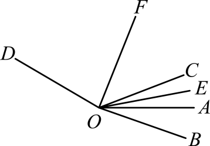
∵∠AOD=150°，∠BOC=30°，
∴∠AOC+∠BOD=∠AOC+∠AOB+∠AOD=∠BOC+∠AOD=180°，
∵OE平分∠AOC，OF平分∠BOD，
∴∠AOE=12∠AOC，∠DOF=12∠BOD，
∴∠AOE+∠DOF=12∠AOC+12∠BOD=12∠AOC+∠BOD=90°，
∴∠AOE与∠DOF互余．
②如图，当∠AOB大于30°而小于180°时，
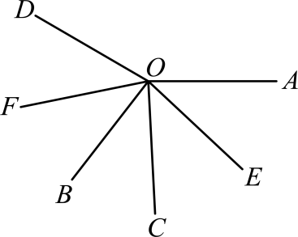
∵∠AOD=150°，∠BOC=30°，
∴∠AOC+∠BOD=360°−∠AOD−∠BOC=180°，
∵OE平分∠AOC，OF平分∠BOD，
∴∠COE=12∠AOC，∠BOF=12∠BOD，
∴∠COE+∠BOF=12∠AOC+12∠BOD=12∠AOC+∠BOD=90°，
∴∠EOF=∠COE+∠BOF+∠BOC=120°．
【变式22-2】（24-25七年级上·湖北武汉·期末）如图1，将两块直角三角板（一块含有30°、60°角，另一块含45°角）摆放在直线MN上，三角板ODC绕点O以每秒15°的速度逆时针旋转．当OD第一次与射线OM重合时三角板ODC停止转动，设旋转时间为t秒．
(1)当t=2秒时，∠BOC=___________°，∠AOD=___________°，∠AOC=___________°；
(2)如图2，若两块三角板同时旋转，三角板OAB以每秒20°的速度绕点O顺时针旋转，当OA第一次与射线ON重合时三角板OAB立即停止转动．
①射线OA和射线OD重合前，当∠AOD=32∠BOC时，求出相应的t的值；
②整个旋转过程中，当满足∠AOD−∠BOC=5°时，直接写出相应的t的值___________．
【答案】(1)135；120；75
(2)①t=3或14135；②4或297
【分析】本题考查了一元一次方程的应用以及角的计算，找准等量关系，正确列出一元一次方程是解题的关键．
（1）利用各角的度数=初始度数-每秒旋转的度数×旋转时间，即可求出结论；
（2）利用时间=路程÷速度，可求出各节点的时间．
①当0≤t<307时，∠AOD=150−35t°，∠BOC=135−35t°，根据∠AOD=32∠BOC，可列出关于t的含绝对值符号的一元一次方程，解之即可得出结论；
②分0≤t≤277，277<t≤307，307<t≤152及152<t≤12四种情况考虑，根据|∠AOD−∠BOC|=5°，可列出关于t的含绝对值符号的一元一次方程，解之取其符合题意的值，即可得出结论．
【详解】（1）解：当t=2秒时，∠BOC=180°−45°−15°×2=105°；
∠AOD=180°−30°−15°×2=120°；
∠AOC=180°−30°−45°−15°×2=75°．
故答案为：105，120，75；
（2）解：180°÷15°=12（秒），180°−30°÷20°=152（秒），180°−30°÷15°+20°=307（秒），180°−45°÷15°+20°=277（秒）．
①当0≤t<307时，∠AOD=180°−30°−15°+20°t=150−35t°，∠BOC=180°−45°−15°+20°t=135−35t°，
∴150−35t=135−35t，
即150−35t=135−35t或150−35t=35t−135，
解得：t=3或t=14135．
答：t的值为3或14135；
②当0<t≤277时，∠AOD=180°−30°−15°+20°t=150−35t°，∠BOC=180°−45°−15°+20°t=135−35t°，
∴150−35t°−135−35t°=15°≠5°，舍去；
当277<t≤307时，∠AOD=180°−30°−15°+20°t=150−35t°，∠BOC=180°−45°−15°+20°t=35t−135°，
∴150−35t°−35t−135°=5°，
即285−70t=5或70t−285=5，
解得：t=4或t=297；
当307<t≤152时，∠AOD=180°−30°−15°+20°t=35t−150°，∠BOC=180°−45°−15°+20°t=35t−135°，
∴35t−150°−35t−135°=15°≠5°，舍去；
当152<t≤12时，∠AOD=15t°，∠BOC=45°+15t°−30°=15t+15°，
∴15t°−15t+15°=15°≠5°，舍去．
综上所述，t的值为4或297．
故答案为：4或297．
【变式22-3】已知∠AOB=120°，OC、OD是∠AOB内部的两条射线．

(1)如图1，若∠DOC=20°，OC平分∠AOB，OE为∠BOC内部的一条射线，∠BOE=13∠BOC，求∠DOE的度数；
(2)如图2，若OM、ON分别平分∠AOC、∠BOD，且∠MOC:∠DON=2:3，若∠DOC=20°，求∠DOM和∠CON的度数；
(3)如图3，C1为射线OB的反向延长线上一点，将射线OB绕点O以6°/s的速度顺时针旋转，旋转后OB对应的射线为OB1，旋转时间为t s0<t≤40，OE平分∠AOB1，∠C1OF=13∠C1OB1，若∠C1OF−∠AOE=30°，直接写出t的值．（注：本题涉及的角均小于180°）
【答案】(1)∠DOE的度数为60°
(2)∠DOM的度数为8°，∠CON的度数为22°
(3)6秒或30秒
【分析】本题考查几何图形中角的计算，角平分线的定义，
（1）利用角平分线的定义求出∠BOC，∠BOE可得结论；
（2）设∠DOM=x，则∠MOC=x+20°，∠DON=32x+20°，构建方程求解；
（3）①当0<t≤10时，②当10<t≤30时，当30<t≤40时，列方程即可得到结论；
利用分类讨论的思想解决问题是解题的关键．
【详解】（1）解：∵∠AOB=120°，OC平分∠AOB，∠BOE=13∠BOC，
∴∠AOC=∠BOC=12∠AOB=12×120°=60°，
∴∠BOE=13∠BOC=13×60°=20°，
∴∠COE=∠BOC−∠BOE=60°−20°=40°，
∵∠DOC=20°，
∴∠DOE=∠DOC+∠COE=20°+40°=60°，
即∠DOE的度数为60°；
（2）设∠DOM=x，则∠MOC=x+20°，∠DON=32x+20°，
∵OM、ON分别平分∠AOC、∠BOD，
∴∠AOM=∠MOC=x+20°，∠BON=∠DON=32x+20°，
∵∠AOB=120°，∠DOC=20°，
∴x+20°+x+32x+20°+32x+20°=120°，
解得：x=8°，
∴∠DOM=8°，∠CON=∠DON−∠DOC=32×8°+20°−20°=22°，
即∠DOM的度数为8°，∠CON的度数为22°；
（3）①当0<t≤10时，
∴∠BOB1=6°t，
∴∠AOB1=120°+6°t，
∵OE平分∠AOB1，
∴∠AOE=12∠AOB1=12120°+6°t=60°+3°t，
∵∠C1OB1=180°−∠BOB1=180°−6°t，
∵∠C1OF=13∠C1OB1，
∴∠C1OF=13×180°−6°t=60°−2°t，
∵∠C1OF−∠AOE=30°，即60°−2°t−60°+3°t=30°，
∴60°−2t°−60°−3°t=30°或60°−2t°−60°−3°t=−30°，
∴t=−6（不符合题意，舍去）或t=6；
②当10<t≤30时，
∴∠BOB1=6°t，
∴∠AOB1=360°−120°+6°t=240°−6°t，
∵OE平分∠AOB1，
∴∠AOE=12∠AOB1=12240°−6°t=120°−3°t，
∵∠C1OB1=180°−∠BOB1=180°−6°t，
∵∠C1OF=13∠C1OB1，
∴∠C1OF=13×180°−6°t=60°−2°t，
∵∠C1OF−∠AOE=30°，即60°−2°t−120°−3°t=30°，
∴60°−2t°−120°+3°t=30°或60°−2t°−120°+3°t=−30°，
∴t=90（不符合题意，舍去）或t=30；
③当30<t≤40时，
∴∠BOB1=360°−6°t，
∴∠AOB1=360°−6°t−120°=240°−6°t，
∵OE平分∠AOB1，
∴∠AOE=12∠AOB1=12240°−6°t=120°−3°t，
∵∠C1OB1=180°−∠BOB1=180°−360°−6°t=6°t−180°，
∵∠C1OF=13∠C1OB1，
∴∠C1OF=13×6°t−180°=2°t−60°，
∵∠C1OF−∠AOE=30°，即2°t−60°−120°−3°t=30°，
∴2t°−60°−120°+3°t=30°或2t°−60°−120°+3°t=−30°，
∴t=42（不符合题意，舍去）或t=30（不符合题意，舍去；
综上所述，t的值为6秒或30秒．
【考点23 实际问题中的角度计算】
【例23】如图1，大课间的广播操展让我们充分体会到了一种整体的图形之美，欢欢和乐乐想从数学角度分析下如何能让班级同学们的广播操做得更好，他们搜集了标准广播操图片进行讨论，如图2，为了方便研究，定义两手手心位置分别为A，B两点，两脚脚跟位置分别为C，D两点，定义A，B，C，D平面内O为定点，将手脚运动看作绕点O进行旋转：
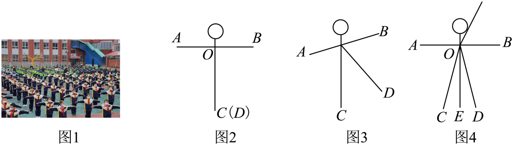
(1)填空：如图2，A，O，B三点共线，且∠AOC=∠BOC，则∠AOC=______°
(2)第三节腿部运动中，如图3，欢欢发现，虽然A，O，B三点共线，却不在水平方向上，且∠AOD:∠BOC=6:5．她经过计算发现，∠AOC−20°∠BOD+12°的值为定值，请判断欢欢的发现是否正确，如果正确请求出这个定值，如果不正确，请说明理由；
(3)第四节体侧运动中，乐乐发现，两腿左右等距张开且∠COD=30°，开始运动前A、O、B三点在同一水平线上，OA、OB绕点O顺时针旋转，OA旋转速度为50°/s，OB旋转速度为25°/s，当OB旋转到与OD重合时，运动停止，如图4
①运动停止时，直接写出∠AOD=______；
②请帮助乐乐求解运动过程中∠AOC与∠BOE的数量关系．
【答案】(1)90
(2)正确，代数式的值为56；
(3)①105°；②当0≤t≤2.1时，∠AOC+2∠BOE=255°；当2.1<t≤3时，∠AOC−2∠BOE=105°．
【分析】（1）由A，O，B三点共线，可得出∠AOC+∠BOD=180°，再由两角相等，可得出∠AOC=90°；
（2）由∠AOD:∠BOC=6:5，设∠AOD=6α，则∠BOC=5α，分别表达∠AOC−20°和∠BOD+12°，再求比值，可得结论；
（3）①算出运动停止时的时间，求出OA运动的角度，进而求出∠AOD的度数；②由OA的运动过程可知，需要分类讨论，在点C，O，A共线前，和共线后两种状态，分别求解即可．
【详解】（1）解：∵A，O，B三点共线，
∴∠AOC+∠BOD=180°，
∵∠AOC=∠BOD，
∴∠AOC=12×180°=90°．
故答案为：90；
（2）∵∠AOD:∠BOC=6:5，
设∠AOD=6α，则∠BOC=5α，
∴∠AOC=180°−∠BOC=180°−5α，∠BOD=180°−∠AOD=180°−6α，
∴∠AOC−20°∠BOD+12°=180°−5α−20°180°−6α+12°=160°−5α192°−6α=560°−2α6100°−2α=56．
∴欢欢的发现是正确的，代数式的值为56；
（3）解：∵∠COD=30°，
∴∠COE=∠EOD=15°，∠BOD=∠AOC=75°，
设运动时间为ts，则t=75°÷25°=3，则0≤t≤3．
①运动停止时，即t=3时，OA旋转的角度为50°×3=150°，
∴∠AOD=75°+180°−150°=105°，
故答案为：105°；
②当点C，O，A三点共线时，t=180°−75°÷50°=2.1；
∴当0≤t≤2.1时，∠AOC=75°+50°t，∠BOE=90°−25°t，
∴∠AOC+2∠BOE=255°；
当2.1<t≤3时，∠AOC=75°+30°+180°−50°t=285°−50°t，
∠BOE=90°−25°t，
∴∠AOC−2∠BOE=105°．
综上，当0≤t≤2.1时，∠AOC+2∠BOE=255°；当2.1<t≤3时，∠AOC−2∠BOE=105°．
【点睛】本题主要考查角的和差的相关计算，发现图形中角之间的和差关系是解题关键．
【变式23-1】（25-26七年级上·全国·课后作业）在市场上称货物用的台秤的量程（称量的最大范围）一般是16kg，指示盘上的刻度是均匀的，把12kg蔬菜放在秤上，指示盘上的指针转了270°．
(1)把4kg的蔬菜放在秤上，指针转了多少度？
(2)若指针转了180°，这些蔬菜有多少千克？
【答案】(1)把4kg的蔬菜放在秤上，指针转了90°；
(2)若指针转了180°，这些蔬菜有8kg．
【分析】（1）（2）先求出台秤指示盘指针最大转动角度，再利用台秤量程和指针转动度数之比即可求解.
【详解】（1）解：（1）由题可知：270°÷1216=360°，
∴指针最多能转动360°，
∴ 416×360°=90°，
∴把4kg的蔬菜放在秤上，指针转了90°.
（2）（2）由（1）可知，指针最多能转360°，
180°360°×16=8kg，
∴若指针转了180°，这些蔬菜有8kg．
【点睛】本题考查了台秤量程和指示盘转动度数之间的关系，利用量程和转动度数成正比是解题关键.
【变式23-2】游乐园的摩天轮深受学生们的喜爱，如图1是某游乐园的摩天轮的结构图，16个座舱均匀分布在圆形转轮边缘，摩天轮以固定的速度绕中心逆时针方向转动，转一周需要30分钟．如图2是摩天轮的主视图，座舱与圆形转轮边缘的连接点按顺时针依次标注为Mi(i=1、2⋯⋯16),△AOB表示的是摩天轮的支架，且∠AOB=60°．
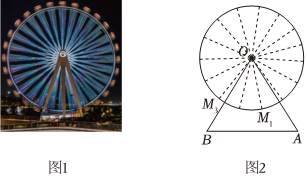
(1)摩天轮每分钟转动____________°，∠M1OM3=____________°；
(2)如图2，在某一时刻，连接点M1转动到∠AOB的内部，此时∠AOM1=18°．
①求此时的∠BOM3的度数；
②求当OM3第一次平分∠AOB时，摩天轮的转动时间以及此时∠AOM1的度数；
③设摩天轮转动的时间为t，在连接点M1到达到最高处前，是否存在∠BOM3=2∠AOM1的时刻？若存在，求出t的值，若不存在，请说明理由．
【答案】(1)12；45
(2)①∠BOM3=3°；②转动时间为3312=114min， ∠AOM1=15°；③存在，t的值为114或1312
【分析】本题考查角度的和差计算，一元一次方程的几何应用，角平分线的相关计算等知识，理解各角之间的数量关系和正确表示出各角是解题的关键．
（1）利用转动一周的时间和周角的大小即可求出摩天轮每分钟转动的角度，根据周角平分成16份，而∠M1OM3占其中的两份即可得解；
（2）①结合图形，利用角度的和差关系即可得解；
②作∠AOB的角平分线OC交AB于C，则∠BOC=12∠AOB=30°，从而求出转动的角度，继而求出转动时间，同时OM1转动的角度也是33°，从而求出∠AOM1；
③用t表示出∠BOM3和∠AOM1，再利用∠BOM3=2∠AOM1列方程求解即可．
【详解】（1）解：依题意得：摩天轮每分钟转动的角度是：360°÷30=12°，∠M1OM3=216×360°=45°，
故答案为：12；45；
（2）①∵∠AOB=60°，∠AOM1=18°，
∴∠BOM1=∠AOB−∠AOM1=60°−18°=42°，
又∵∠M1OM3=45°，
∴∠BOM3=∠M1OM3−∠BOM1=45°−42°=3°；
②作∠AOB的角平分线OC交AB于C，
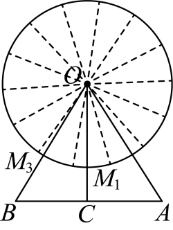
则∠BOC=12∠AOB=30°，
∴∠COM3=∠BOM3+∠BOC=30°+3°=33°，即转动的角度是33°，
∴转动时间为3312=114min，OM1转动的角度也是33°，
∴∠AOM1等于OM1转动的角度减去原来∠AOM1的角度，
即∠AOM1=33°−18°=15°；
③存在，t的值为114或1312，理由如下：
∵OC是∠AOB的角平分线，
∴∠AOC=∠BOC=30°，
∴COM1=∠AOC−∠AOM1=30°−18°=12°，
∴点M1到达到最高处时，时间为：180−1212=14min，
∴0≤t≤14．
依题意得：∠BOM3=3−12t°，∠AOM1=18−12t°，
∵∠BOM3=2∠AOM1，即3−12t=218−12t，
解得：t=114或1312，
∴存在，t的值为114或1312．
【变式23-3】（24-25七年级上·广东湛江·期末）大课间的广播操展示让我们充分体会到了一种整体的图形之美．洋洋和乐乐想从数学角度分析下如何让班级同学们的广播操能做的更好，他们搜集了标准广播操图片进行讨论，如图1，为了研究方便，两手手心位置分别记为A，B两点，两脚脚跟位置分别记为C，D两点，若A，B，C，D在同一个平面内，做操过程中将手脚运动近似看作A，B，C，D绕点O转动，其中O为该平面内的一个定点．（本题中的角均大于0°且小于或等于180°）

(1)如图1，A，O，B三点共线，且∠AOC=∠BOC，则∠AOC=_____°；
(2)在第三节腿部运动中，如图2，洋洋发现，A、O、B三点共线，却不在水平方向上．若∠COD=62°，∠AOD:∠BOC=6:5，求∠AOC的大小．
(3)第四节体侧运动中，如图3，乐乐发现，在运动前A、O、B三点在同一水平线上，两腿左右等距张开，∠COD=30°，OE平分∠COD，且∠AOE=90°，OA、OB绕点O顺时针旋转，OA旋转速度为每秒50°，OB旋转速度为每秒25°，当OB旋转到与OD重合时运动停止．
①运动停止时，∠AOD=______°；（用小于平角的度数表示）
②在运动过程中，是否存在常数m，使得∠AOC+m∠BOE为定值？若存在，求出常数m及该定值；若不存在，请说明理由．
【答案】(1)90
(2)70°
(3)①105；②当0≤t≤2.1时，存在常数m=2，使得∠AOC+m∠BOE为定值255°；当2.1<t≤3时，存在常数m=−2，使得∠AOC+m∠BOE为定值105°
【分析】本题考查了角的运算、一元一次方程的应用、整式加减中的无关型问题，熟练掌握以上知识点，结合图形发现角的和差关系是解题的关键．
（1）由A，O，B三点共线可得∠AOC+∠BOC=180°，再结合∠AOC=∠BOC，即可求解；
（2）由∠AOD:∠BOC=6:5，设∠AOD=6α，则∠BOC=5α，结合图形可得∠AOD+∠BOC−∠COD=180°，解方程求出α的值，即可求出∠AOC的大小；
（3）①算出运动停止时的时间，求出OA运动的角度，进而求出∠AOD的度数；②由OA的运动过程可知，需要分类讨论：在点A、O、C共线前，和共线后2种状态，分别用t表示出∠AOC和∠BOE的度数，再利用整式加减的运算即可求出常数m和定值．
【详解】（1）解：∵A，O，B三点共线，
∴∠AOC+∠BOC=180°，
又∵∠AOC=∠BOC，
∴2∠AOC=180°，
解得：∠AOC=90°．
故答案为：90．
（2）解：∵∠AOD:∠BOC=6:5，
∴设∠AOD=6α，则∠BOC=5α，
∵A，O，B三点共线，
∴∠AOD+∠BOC−∠COD=180°，
∴6α+5α−62°=180°，
解得：α=22°，
∴∠AOD=6α=6×22°=132°，
∴∠AOC=∠AOD−∠COD=132°−62°=70°．
（3）解：①∵ OE平分∠COD，∠COD=30°，
∴∠DOE=12∠COD=15°，
∵∠AOE=90°，
∴∠BOE=180°−∠AOE=90°，∠AOD=∠AOE+∠DOE=90°+15°=105°，
∴∠BOD=∠BOE−∠DOE=90°−15°=75°，
∴ OB的旋转时间为75÷25=3（秒），
∴运动停止时，OA旋转的角度为50°×3=150°，
∴运动停止时，∠AOD=360°−105°−150°=105°．
故答案为：105．
②当点A、O、C三点共线时，t=180−75÷50=2.1（秒），
当0≤t≤2.1时，∠AOC=75+50t°，∠BOE=90−25t°，
∴∠AOC+2∠BOE=75+50t°+290−25t°=255°；
当2.1<t≤3时，∠AOC=180°−50°t−2.1=285−50t°，∠BOE=90−25t°，
∴∠AOC−2∠BOE=285−50t°−290−25t°=105°；
∴综上所述，当0≤t≤2.1时，存在常数m=2，使得∠AOC+m∠BOE为定值255°；当2.1<t≤3时，存在常数m=−2，使得∠AOC+m∠BOE为定值105°．
【考点24 与三角板有关的角度计算】
【例24】如图1，点O为直线AB上一点，过点O作射线OC，使∠AOC:∠BOC=2:1，将直角三角板的直角顶点放在点O处，一边ON在射线OA上，另一边OM在直线AB的下方．
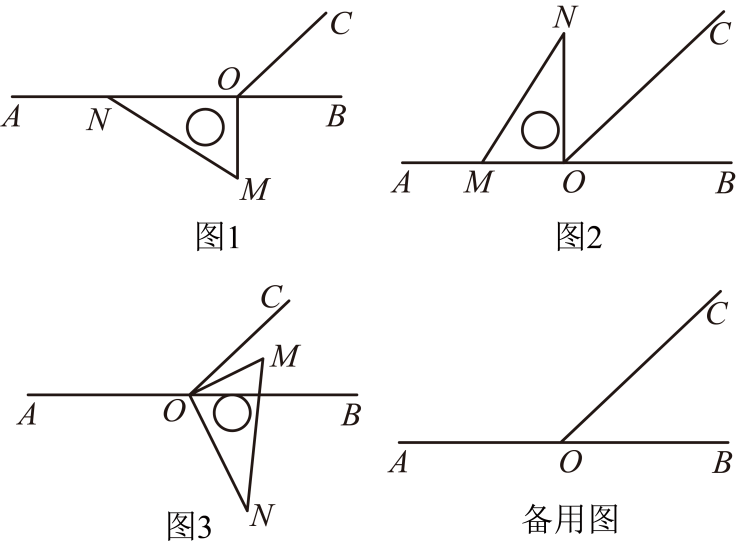
(1)在图1中，∠AOC=______，∠BOC=______．
(2)将图1中的三角板按图2的位置放置，使得OM在射线OA上，则∠CON=______；
(3)将上述直角三角板按图3的位置放置，使得OM在∠BOC的内部，求∠BON−∠COM的度数．
【答案】(1)120°，60°；
(2)30°；
(3)∠BON−∠COM的度数为30°
【分析】本题考查角的计算，找出各个角之间的关系，与已知条件建立关系，然后求出所求角的度数是解题的关键．
（1）根据平角的定义可知∠AOC+∠BOC=180°，结合已知条件∠AOC:∠BOC=2:1，即可求出∠AOC和∠BOC的度数；
（2）根据∠AOC的度数和∠MON的度数可以得到∠CON的度数；
（3）根据角的和差关系，分别用含有∠BOM的式子表示出∠BON和∠COM，然后两者相减即可得到∠BON−∠COM的度数．
【详解】（1）解：∵∠AOC+∠BOC=180°，∠AOC:∠BOC=2:1，
∴∠AOC=120°,∠BOC=60°，
故答案为：120°，60°；
（2）由（1）得，∠AOC=120°，
∵∠MON=90°，
∴∠CON=∠AOC−∠MON=120°−90°=30°，
故答案为：30°；
（3）由（1）得，∠BOC=60°，
∴∠COM=∠BOC−∠BOM=60°−∠BOM，
∵∠MON=90°，
∴∠BON=∠MON−∠BOM=90°−∠BOM，
∴∠BON−∠COM=90°−∠BOM−60°−∠BOM=30°，
即∠BON−∠COM的度数为30°．
【变式24-1】（24-25六年级下·山东威海·期末）将一副三角板如图1摆放，使AO，OC在同一条直线上，∠AOB=45°，∠COD=60°，OM平分∠BOC，ON平分∠BOD．
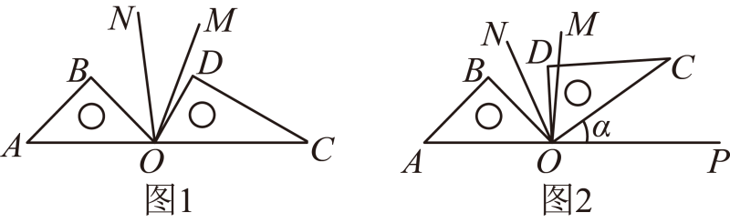
(1)求∠MON的度数；
(2)将三角板COD绕点O逆时针旋转α0°<α<75°，其它条件不变，得到图2，请直接写出∠MON的度数______．
【答案】(1)30°
(2)30°
【分析】本题主要考查了三角板中的角度计算，角平分线的有关计算等知识．
（1）利用平角的定义分别求出∠BOC，∠NOD，再利用角平分线的定义分别求出∠MOC， ∠NOD，最后根据角的和差即可求出答案．
（2）利用平角的定义分别求出∠BOC，∠NOD，再利用角平分线的定义分别求出∠MOC， ∠NOD，最后根据角的和差即可求出答案．
【详解】（1）解：∵∠AOB=45°，AO，OC在同一条直线上，
∴∠BOC=180°−∠AOB=135°，
∵OM平分∠BOC，
∴∠MOC=12∠BOC=67.5，
∵∠COD=60°，
∴∠MOD=∠MOC−∠COD=7.5°，∠BOD=180°−∠AOB−∠COD=75°，
∵ON平分∠BOD．
∴∠NOD=12∠BOD=37.5，
∴∠MON=∠NOD−∠MOD=30°
（2）解：∵∠AOB=45°，
∴∠BOC=180°−∠AOB−α=135°−α，
∵OM平分∠BOC，
∴∠MOC=12∠BOC=67.5−12α，
∵∠COD=60°，
∴∠MOD=∠COD−∠MOC=12α−7.5°，∠BOD=180°−∠AOB−∠COD−α=75°−α，
∵ON平分∠BOD．
∴∠NOD=12∠BOD=37.5−12α，
∴∠MON=∠NOD+∠MOD=37.5−12α−7.5°+12α=30°．
【变式24-2】（24-25六年级下·山东东营·期末）以直线AB上一点O为端点作射线OC，使∠BOC=40°，将一个直角三角板的直角顶点放在O处，即∠DOE=90°．

(1)如图1，若直角三角板DOE的一边OE放在射线OA上，则∠COD=___________；
(2)如图2，将直角三角板DOE绕点O顺时针转动到某个位置，
①若OE恰好平分∠AOC，则∠COD=___________；
②若OD在∠BOC内部，请通过计算写出∠BOD与∠COE有怎样的数量关系．
【答案】(1)50°；
(2)① 20°；②当∠COD在∠BOC的内部时，∠COE−∠BOD=50°，理由见解析．
【分析】本题主要考查了平角、余角的定义，角度和差，角平分线的定义等知识，掌握知识点的应用是解题的关键．
（1）利用平角、余角的定义可求解；
（2）①由平角定义得∠AOC=180°−40°=140°，又OE恰好平分∠AOC，∠COE=12∠AOC=70°，然后通过余角定义即可求解；
②由题意得∠DOE=90°，通过∠COD=∠BOC−∠BOD=40°−∠BOD，∠COD=∠DOE−∠COE=90°−∠COE，得出40°−∠BOD=90°−∠COE，从而求解．
【详解】（1）解：∵∠AOD=90°，∠BOD+∠AOD=180°，
∴∠BOD=90°，
∴∠COD=∠BOD−∠BOC=90°−40°=50°，
故答案为：50°；
（2）解：①∵∠AOC+∠BOC=180°，∠BOC=40°，
∴∠AOC=180°−40°=140°，
∵OE恰好平分∠AOC，
∴∠COE=12∠AOC=70°，
∵∠DOE=90°，
∴∠COD=90°−70°=20°，
故答案为：20°；
②当∠COD在∠BOC的内部时，∠COE−∠BOD=50°，理由如下：
由题意得∠DOE=90°，
∵∠COD=∠BOC−∠BOD=40°−∠BOD，∠COD=∠DOE−∠COE=90°−∠COE，
∴40°−∠BOD=90°−∠COE，
∴∠COE−∠BOD=50°．
【变式24-3】如图，点O为直线AB上一点，过点O作射线OC，使∠BOC的度数比∠AOC度数的2倍还多6°，将一直角三角板DFE的直角顶点F放在点O处，

(1)如图①，将直角三角板DFE的一边FD在射线OA上，求∠COE的度数；
(2)如图②，将直角三角板DFE绕点O顺时针转动到某位置，若OC恰好平分∠AOE，求∠COD的度数；
(3)如图③，将直角三角板DFE绕点O任意转动，如果FD始终在∠AOC的内部，试猜想∠AOD和∠COE有怎样的数量关系，并说明理由．
【答案】(1)32°
(2)32°
(3)∠COE−∠AOD=32°，见解析
【分析】此题主要考查角的和差、角平分线的定义、一元一次方程的应用，解题的关键是熟知角平分线的定义及角度的运算法则．
（1）设∠AOC=x°，则∠BOC=(2x+6)°，根据∠AOC+∠BOC=180°得到方程，故可求出x，故可求出∠COE的度数；
（2）根据OC平分∠AOE，得到∠EOC=∠AOC=58°，再根据∠COD=∠DOE−∠EOC故可求解；
（3）分别表示出∠COE=90°−∠COD，∠AOD=58°−∠COD，由此即可得到∠AOD和∠COE的关系．
【详解】（1）解：设∠AOC=x°，则∠BOC=(2x+6)°
∵∠AOC+∠BOC=180°，
∴x+2x+6=180，
∴x=58，
∴∠COE=90°−∠AOC=90°−58°=32°；
（2）解：∵OC平分∠AOE，
∴∠EOC=∠AOC=58°，
∴∠COD=∠DOE−∠EOC=90°−58°=32°；
（3）解：∠COE−∠AOD=32°，
理由：当FD始终在∠AOC的内部时，∠COE=90°−∠COD，
∠AOD=∠AOC−∠COD=58°−∠COD，
∴∠COE−∠AOD=32°．